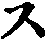

成唯論疏泰抄卷第十三本
疏云顯緣攝法盡義更別四緣。攝法盡義更別立者。即是四緣。亦於一切法盡。即是十五依處。亦攝一切法盡。即是四緣。依十五依處。別義說攝一切法盡。即十五依處。別義之上立十因。亦依十五依處上義差別。故立為十因。十五依處是法體。此十因者。十五依處上義用。用不離體。故論云。依十五處義差別故。在為十因也。因別體者。今言十因依十五依處。義總別故。立為十因者。約體用解。即十五依處是解。十因是義用。用不離體故。十因不離十五依處也。
疏云然依者。於義俱第七轉聲也。依聲色。若言於於即通境。通所依根。若通境也。
疏云然大論三十八但有三種十因及五果體是依處於者。三種十因者。謂無記十因。謂種等事。清淨十因。謂三乘無漏法。雜染十因。謂此十二支生死事。三種十因。如瑜伽論三十八說也。然三十八但說十因及五果。不明十五依處也。
疏云隨一切法名為先故總為先故說是彼諸法隨說因。由先有一切法體故即起名也。謂此名心。此名色。此名人等。謂皆此名已。即心中起俱作。諸名想聲想如想等。既起想已。即起悟也。誰一切法體為果。能離染為因。即取此亦起語。為此隨說因體。若法名想三。即是起染之來由也。即與唯識論意同也。此文意說。由先有一切法故。即諸佛如來證得此一切法已。即於後得起中依一切法上安立名字。隨說十二靜教十八界等。既有名已。其彌勒等諸菩薩。皆此名教已。即菩薩心中起盡。即取依。然誰名而誰一切。謂此是名此是心等。既菩薩菩。薩。與餘有情說時。先菩薩心中起想。想能施說種種名言為業。既想想已即說之。故約起名。唯在於佛。起想即在菩薩。即取薩所起離言。為隨說因體。或可由先有一切法故即盡者。佛證此一切法已。即謂今時釋迦佛說十二部名教。今時釋迦佛皆過去佛說名教。即釋迦佛心上起想。依能離言教所安立。此是名此是名此心等。既起想已。然為餘有情起言說也。此約廣展轉傳來。即過去佛起名現在佛想及起語。此所起語名隨因也。彼論文勢似取離一切法乃至三法為體者。然彼顯揚等論文勢。似取離一切法之上名想語。即取此想語三法。為隨設說因體。不唯取起語。為隨說因體。
疏云然今此文正解彼意乃至心是離諸法因也者。然今唯識論文正解。彼論但取法名想三所起語。此所起語即名隨說因體。所以者。但依處在隨說因。故取語為隨說因體。若不唯取語為隨說因者。即論文應言。依不想說三者。隨語因說者。即是語也。故知又但取所起語為此因體。此中則以能於語為因。所詮諸法為果也。即以名想為所依語。是能依由名想。方能起語耶。即言語正是詮諸法因也。
疏云語性總言即通三性乃至體實二性者若約假者。語聲能表善惡故假名。假名善惡故。說語聲通三性。第二約實我者。語聲通二性。若在佛依語聲。即是無漏善性。若一切異生。十地已來菩薩語聲。皆是無記性。
疏云或可大乘離聲無體乃至例難同所依故者。若前解名唯二性。即是實義。今者約假說者。則通三性。或可大乘名等依語假者。名等離聲無體。既所依聲即通三性。此名從所依聲名。亦通二性。由如生異滅四相。即如所相者。為法體是善性。此能相生住異滅。從所依有依法體。亦是善性。有為法體。是不善性。此生住異滅。亦如所依法體亦通不善。又如何得之。法體既通三性。能得之令得亦三性也。非得等所依命根同分擇滅之得能得道也。大乘即不在有法前得法後得也。但於法體同時。假立法俱得也。
疏云不可言三相是共有因乃至義皆通故者。若薩婆多說。生等四相。望法體是俱有因。所以四起所依體四相亦通三性。若法前法後俱得。即從所得法以所。前以能得之得從亦得之法亦通三性。然小乘宗。不立得與法體為俱有因。何以故。若法體在未來。即起法前得。至過去即得與法解不俱。又法體在過去。其法後得亦在未來。或在現在。法體既不同世。故不得作俱有因。又擇滅非擇滅無為。不蘊三世。其無為上得。即蘊三世故也。若名句文三。是自性無記。若名句文望三法體。即不是俱有因。亦不得於得能得諸法。所以名句等。是自性無記。又名句文亦不同威儀。威儀中即有緣威儀心。故威儀心等。其名句亦不因工巧。工巧中亦有緣工巧心。發工巧心。其名句等亦不同異熟。異熟是善是惡所滅故。故是自性無記。然小乘立五種無記。謂餘四無記上。更立自性無記。謂名句文。今大乘難曰。不可說言三相是共有因。三相即通三性。名等非是共有因。名等唯無記法。我今大乘三相是假。所依法體即三性。名句文是假。亦從所依聲。聲既通三性。其名句等亦通三性。所以名句望。本是俱有因。生等三相與法亦是俱有因。得等是假。從所得法。亦通三性也。然大乘說名句等通三性者。亦約假說也。又大乘亦不說名等。與本及四相與法體等。為俱有因。假取他小乘義。大乘假說有俱有因。故說名等通三性也。然對法說名句等是自性無記者。隨轉理門故。今大乘說名等通三性。以佛身中名句等。是無漏善。又如對法說。五色根是無記。亦是隨轉理門。若大乘中根。亦是善性。以佛身中五根。是無漏善也。
疏云即依此悟隨見聞覺知得者。即依此語。若隨見色得隨聞聲。彼隨所知香味觸得隨意覺一切法。後方起言說說諸義。故取能詮語為因。所詮一切法為果也。若大乘眼見名見聞耳皆名中。鼻舌身三名與。以是現量故。意識名覺。意識或通非量等。故小乘中見明同前。若鼻舌身三識名覺。以為香味觸三是無記故。由如死屍。今及於彼。故言鼻舌身亦覺。若意識名知也。此即是約能見者說。為有見皆此等事已。此人即說言我見此事。我皆此事。我覺此事。我能知此事故。此由約能見者說也。或隨彼所見等事。皆說諸義。故此文即約所見皆。事說。謂我句來所見。如是色男女等事說依義故。此文取約所見皆。事說。謂我句來所見如見如是色男女等事。或向來所皆。如是舌或向來所覺味等也。
疏云古師云所說一切法是皆因體者。解云。若古師說云。若一切為因故。方起言說。即一切法體。以為隨說因體。言語是果也。
疏云然有漏無記隨說因乃至染淨此因唯此可解者。然疏主。已見瑜伽論中。有三種子因。便即傍疎義。既見此隨說因。為簡無記。即隨說因。為簡無記之隨說因。為簡雜染。即通說因。為簡雜染之隨說因。為簡清淨。即隨說因為簡清淨之隨說因。若無記即隨說因。即是持業釋。即能詮語。因是有漏無記性。所詮一切果法。通漏無漏三性等。即除佛語唯是無漏善性。故餘十地已來菩薩。及一切異生等。能詮語聲。皆是有漏無記性。即是所詮果法之中。得通有無漏及為善性。又十地已來菩薩及異生等。有漏無記性語。亦能說生死雜染等法。即所詮果法中。得有雜染惡法也。又若十地已來。及異生等有漏無語記。亦能詮種因之法。[聲-耳+米]麥等法。即所詮果法。通無記性也。即是能詮隨說因。是有漏無記性。所詮果法有漏無為三性等也。即是因唯無記法。果通一切法也。若無記云隨說因。即是依主釋也。即是諸佛十地菩薩。及異生有漏三性等語說種因。[聲-耳+米]麥等無記事。乃至是有漏無漏三性等隨說因。而詮無記事果也。即是能詮因。通一切法。所詮果。果唯是有漏無記性。若雜染即隨說因。持業釋也。即除佛已外。餘異生等有漏雜染語。而詮有漏有為無。三性等果法。即是能詮隨說因。唯是雜染性。所詮果法中。通一切有漏無漏有為無為三性等也。若雜染之隨說因。即依主釋也。即是諸佛及十地菩薩。一切異生等。有漏無漏等三性語。詮生死雜染之法。此乃即是有漏無漏三性等隨說因。而詮雜染等事。即是能詮隨說因。通三性漏無漏等。所詮果法。唯是雜染性也。若清淨即隨說因。即持業釋。所詮果法通漏無漏三性等法。即除十地菩薩。及餘異生等說。說一切有漏無漏有為等。一切清淨雜染無記等事。此乃即是無漏清淨隨說因。而所詮果通漏無漏三性等果事也。若清淨之隨說因。即依主釋。即是諸佛十地菩薩。及異生等有漏無漏三性語。而說菩提涅槃漏清淨等事。此乃即是有漏三性等隨說因。詮無漏清淨果法等事也。即是能詮語。通漏無漏三性等。所詮果法唯是清淨也。今此中不取無記。即隨說因雜染色。隨說因清淨。即隨說因。以能詮語太狹也。此中唯取無記之隨說因。雜染之隨說因。清淨之隨說因。以是能詮通漏無漏等三性等寬故也。若哲法抄者。若一切異生及十地菩薩諸佛等說種因。[聲-耳+米]麥等無記事。此等色名無記隨說因。若一切異生十地菩薩諸佛等說生死雜染也法。即名雜染隨說因。若諸佛及十地菩薩及異生凡夫等說菩提涅槃無漏記。此等即名清淨隨說因。果通一切有為無為者。問論中說無為。言語道斷性離言故。又非言依。如何今說無為同於有為是所詮等果。思之。問准前於教體中。即說十地菩薩第六無漏識心也之上。依所有名等。皆是無漏善。何故此中即說十地菩薩所有漏皆是無記。即隨說因。又問。其隨說因。為取所依聲。為取名句文為體。若佛聲為體。大乘聲體能詮名句能詮故。若取名句為體。其隨說因應是假也(思之)。問十地菩薩及二乘等。無有雜染隨說因也不(思之)。問前說隨說因中。既有無記隨說因。因無記之隨說因。其十因中。乃至不相違因中。亦有無記。即不相違因。無記之不相違因。雜染即不相違因。雜染之不相違因。清淨之不相違因也不(思之)。
疏云由如名等是彼釋果乃至執著由見名字起者。若言是不想見。此文即無差本集論亦也。若無由如名字取相執著。此文即是師子覺文也。彼論意說。由名先故。即起想安立分慮。然想已後方起釋。如能詮名字下。而取於境。即執前不是實名。執名下所詮色聲等是實。能發語故。既見起執。執前所起想是實想。方起言說。即以名想見三。以為隨說因體所起云語。以為果也。即以名想見三法。為語之依處。語依此三法起故也。今言如能詮名字者。亦得如由表義名言言名詮。今者能見能境也。今者但約至集論起見之時。如與能詮名下所詮境。即起執相也。
疏云問有何所以二論相違者。此中問云。何故對法中。即以名相見三以為隨說因體。名相見三何起語即名果。何故唯識及瑜伽等論。即用法名想三法。以為起語之來由。而起於語。即用所起語。以為隨說因。所詮一切法以為果也。故二論相違願。
疏云二論解因果對法無著乃至不相違各據一義者。若大論等以言說為自體。以所詮一切法為果者。即約能詮所詮者。即以能詮為因。所詮為果。即用所詮是能詮之果。能詮之因即約能詮所詮。是能詮之果能詮之因。即約能詮所詮已因果也。若對法論中以生起為因果。即依名想見。而起言說。即名想見三法為能生起。以為因也。所生起語以為果也。即依名想見而起言說。即以為不想見三法為能生起以為因也。所生起語以為果也。二論各據一義。亦不相違也。
疏云故對法論云隨說作乃至隨說之能作觀待能作等。隨說者即是語也。能作者。即是名想見三法也。為名想見三法能作語。如建立十因次第者。亦如第一因果對。即第二隨說因。名為能詮。已後九因皆是作者。是所詮果也。第三二能所對。建立觀待因。即是觀待因中。能受為因。所受為果等。第三遠近對。建立牽引生起二因。即牽引生起二因。即牽引因去果遠。生起因去果近也。第四親疎對。即建立攝受因同事因。若據受因名為疎。同事因名為親。第五同性異性對。即建立引發因定異因。若引發因。唯是同性相引名為同性。若定異因。亦應善惡業為因。而得異熟無記果。即各異性。第六相違不相違因也。
疏云又大論約貫通諸法境以說為因乃至不相違也者。若大論約所詮中。通一切有漏無漏有為無為三性等。所詮境寬故。即以說為因。所詮法為果。若對法論中據染分相生。即以名相見為因。以說為果。即見執著。執著即是染分。故不通淨也。
疏云然有人云唯三受為體乃至然領受中通能所受者。然有人云。唯通苦受攝為體。乃至然領受中通能所受者。然有解云。唯通苦受樂受攝受等。以為觀待因體者。不然。若待心中情欲方求方求領合。可說。即以受為因體。亦有失。領受為因。方起情欲。即以所受合為因。情欲為果。又所受領合非是三體故。故知不得唯用苦樂等三受。為觀待因體。然觀待因中。亦以所受為因。能受為果。亦以能受為果。故知通能所受為體也。
疏云不可言欲欲不遍故非受性故者。句以見前言待情欲等求領合等。即言以欲為體。言非是受故。此言不通心故。有心之時亦無言故。能受是遍行心故。起立之時即有受故。故用受為體也。
疏云即觀於此隨能所受領彼所能受果。即有能受之中。亦有所受。即是能為因。所受果為因。能受為果也。
疏云或生住成得所此待與所生等為因者。若種子與所生牙等。為對待因。若水輪依風能得住。即與水輪為對待。此等皆是所受為因。所受為果也。問然此觀待因。此等皆唯疏文中。既除外種望牙內種望現等。皆非是觀待因。如何此文中又解第一句。三乘種性為先。其第四句。若約證得涅槃果中。第四句即是此觀待因攝。若第四句約得涅槃果。種子生現行。即不是親觀待因攝。即取成住重。若生得中。即若取分分第二第三句等者。皆是此觀待因攝也。若作此釋皆勝也。然水輪風輪。風輪為因。其風輪即是所待因。水輪即是能待果。乃至地輪依金輪。金輪即是所待因。地輪是能待果也。此所待與所生等為因者。所生即是能待果。所待者即是因也。即所待與能待為因也。若求若取者。若求者即起情言。言得喫合等若取者。即從營為造作等事也。
疏云然此所待若能所受乃至四句別也者。此一段文大意者。若所待名因。即由所藉果起故。若能待是果。云能藉彼因力。其果方生故。故因位恒為所待。其果常作能待。待者藉也。故今作四句者。有以能受為因。能受為果。如待苦有樂故。如有人有病苦受。望病得差而求樂受。既不見醫師。即待苦有樂。此即用能受所待為能受。能待為果。有以能受為因所受為果者。如先起情欲為因。方求合等。此即用能受所待為因。所受能待為果。有以所受為果者。如人欲遠行。觀待語言為因。得有往來為果也。此即以所受所待為因。所受能待為果。有以所受為因。能待為果者。如先釋領食為因。後方起情欲果也。此有以所受所藉為因能受為果。此一段文大意如是。
疏云作意等四乃至非領樂已不如於受者。若作意觸想思。雖亦常遍諸心等。然觸唯以觸境為性。不能如受能領樂已。唯受能領樂已故。
疏云但除種子因緣之法乃至不爾應言得等流果者。若觀待因。唯疎相待方是觀待因。故上文言得增上。云用果即除種子因緣之法。如[聲-耳+米]麥種望牙同種子望現行。皆非是觀待因。若取此種望牙內種望現名觀待因。爾者。應下文言得等流果。既下文不言得等流果故。餘種子等因緣法。皆非是觀待因也。
疏云問何故唯說因緣是牽引生乃至竟有何失者。此中何故說因緣。是牽引生起因攝。此因緣復是引發定異同事不相違四因攝。受觀待因。是觀待攝。亦是引發定異同事不相違四因攝。此觀待因亦應是牽引生起攝。究竟有何失也。竟者究竟也。
疏云答曰不然已名遠故名觀待者乃至名相通故。解云。此第一解云。疎遠相待非是親者。方是觀待因故。觀待之名而疎遠也。若親者亦攝得疎。通有親疎名通故也。
疏云又解若親相待亦是此因乃至不說等流等此解為勝者。此即第二解中。亦取親者名觀待因。如解望種現行待內種子。皆是親觀待因攝。下文明果之中。但據疎遠言得增上果。云用果不言親者。則不說得等流果。此觀待因亦得等流果也。此解勝前。如愚意者。此事疏第二解。即順論文。以論文中說觀待因中。即住成得名生及得中。皆有種子生現行故。故觀待因中通親因緣。於理為勝。文解觀待情欲是觀待義乃至故非此因者。即此中疏文。更無別解。即重成前第二一解。一解中唯取疎遠者。名觀待因故。即是能受為因。前受為果。所受為因。能受為果。方是能所受性。是觀待因攝。若內種望現行。[聲-耳+米]種望牙。非是情欲。能所觀待故。親者非是觀待因攝。如種子生牙。雖不待情異種。亦能生牙。
疏云問若爾何故無足為因故有往來業者。即我義問也。此中問意。要觀待情欲。是觀待因者。如是為因。得有往來業。豈却足往來。亦是情欲耶。
疏云答亦是內情欲所待也。若種子現行因緣等法。非是情所待故。非觀待因。若情所待時。即非是因緣故。
疏云前說正義既所受中已所待為因。牙待於種亦可此因者。此中疏文。既無別義。即重成立第二解。第二解云。亦親因緣。種生現行。亦是觀待因。下文且據疎者。說得增上果士用果。不言得等流果法。亦得等流果。既所受中。亦以所待為因。如現行待種。牙待於種。亦是所受為因。所受為果也。
疏云且無記之因若無記即因唯有漏無漏性乃至皆准此去者。若無記即因唯有漏無漏性乃至皆准此去者。若無記即觀待因。即持業釋也。其因唯是有漏情。其果即通漏無漏三性等。如種因等事。即是無記觀待因。然如有人欲種糓麥等因時。即先發願云。我若種得此糓麥等種子已。時作本顯。而將宜買羊牛作及業。而販肉等事。即是無記觀待因。果有漏不善性苦果。通無記事可知。若無記之觀待因。即依主釋。其觀待因即通有漏無漏三性等。其果唯是有漏無記性。若雜染即觀待因。即持業釋。其因唯是雜染性。其果即通漏無漏三性等。如有人因造惡業已遭在。遂即發善心。即如龍樹菩薩諦於行竟宮等惡事。既見餘竟被煞。龍樹菩薩。觀待此惡事。即須發心出家得聖道等。即是種觀待因。其果即通無漏善性等。有人引婬惡業已。即便還俗取妻子。即雜染觀待因。其果即通有漏不善性。餘法唯者。通果無記可解。若雜染之觀待因。即依主釋。其因即通漏無漏三性等果。唯是雜染性也。如有經釋。外道或見佛或皆法。而起誹謗。即墮地獄。即清淨觀待因。其果通種滿。餘者准知。若清淨即因。名持業釋也。其觀待因唯是清淨無漏。其果通漏無漏三性等。若清淨之觀待因。即依主釋。其因即通漏無漏三性等。其果唯是無漏清淨也。然此疏中。既言無記即因。乃至名餘漏等者。即不約瑜伽中三種十因解也。若約彼文者者。若無記因即無漏。文言難染因。知有漏三性法。即總名雜染。雜染因中亦攝得前無記因故。亦疏文即約善等三性。已解因果。應云無記因善因也(思之更撿章疏)。若善發力等所染者。若無漏種子。即從善發等染。若有漏三性法。皆從觀等染不。問同異相性稱故。名為因果者。若同性即善種子。生善現等自果。若異性如若善惡業為因。而感異熟無記自果等也。
疏云亦得因中與能勝清淨之法者。即是聖道無漏現行也。聖道即是能證。涅槃是所證法故。故聖道名清淨法。今即習氣。依處中無漏種子。即與能證涅槃。無漏聖道現行為因緣。聖道現行從因生故。無漏種子即不與所證涅槃作因緣。涅槃不從因生故。勿見大論云。此因證得涅槃清淨因。便即言牽引因為因。而得無為果。以無為非因生故。無為疎遠故。下論文不說習氣依處。牽引因得離繫果故。故知此因。但與能證涅槃。無漏聖道現行為因緣。下論唯定習氣處。牽引因種子生種子。種子生現行等。得等流果。若業種子得異熟果。若外[聲-耳+米]麥等得增上果也。今此親此三性之因。乃至能引等流增上果故者。此文意說。若因是善。果亦是善。因若不善果亦是善。若因不善果亦不善。若因是無記果亦無記。若無記因亦得增上果。如外糓等故。果隨因性。此上皆約因緣能生等流果。或可因是無漏善性。果亦通無記。若有漏六度唯得四果。除離繫果。若無漏六度。即得四果。餘異熟果。若有漏無漏度六相資。即當得五果。即如變易身由無漏業資。感得異熟果。其無漏業所得者。實是增上果也。又如無漏現行。前後相引等流。若同時得四相。同時心心所法。則名增上果。故無漏得二果。若有漏善。亦得二果法等流。前後相分得等流果。同時心心所等流得四相。名增上果也。善不善性即通三性知。若善為因。即得二果。亦生善果。即是等流果。亦生無記果。即是異熟果。若不善為因亦得二。謂得不善果。即是等流果。亦得無記果。即是異熟果。若無記之因。因通三性。果唯無記。若無記因意得無記果知。即是等流果。若善惡為因而得無記果者。是異熟果也。
疏云如淨因與近菩提為緣者。是解之。此疏中且約欲成佛時無漏種子。與金剛定為因緣也。不約已前見道等諦也。疏云此緣如前辨因。隨何性果通三性者。如前約中無間。更解。或前念有漏心。引後念無漏果等。准前等無間緣作法。
疏云若以未來為因果非現在乃至義似未來無實未來知此立理也。此疏文中非因前為一。以果非因前故。而果故者。又別為一。以即是因前而果後故。若心緣未來境。即因在未來。其心心所果。即非現在。其果非在因前故。要因前而果故者。方得名為果故。今者亦不然。相分在現在。義似未來故。能緣心心所果。亦是現在。亦名因果。所以為因之法。若俱若在前。為果之法。若俱若在後也。如愚意知。若現在心緣過去。即是前因而果後。若現在心緣未來境。即是果前而因後也。即是非因前而果後。難意如是。
疏云體是六根即通八識五根為體果唯心心所知。若通八識。即是意根及五色根。為體即用六根也。疏云此前三果果性皆同因准可知者。若前無間滅依處。境界依處。根依處。此前三依處果法。皆同此三依處果。果皆是心心所。既是心心所。即通三性漏無漏等。且如境界依處中。若聲聞人後起無漏心心所。唯緣安立諦。若菩薩後得智起無漏心心法。是無漏善性。若無間滅依處因。亦是心心所果。亦是心心所。即前念滅心心所為因為依處。後念心心所即為果。若境分依處因。即通色心心一切法。如他心起緣他心境因也。若果唯是心心所。即所緣境分為因為處。能緣心心所法為果。若根依處因即通色心。色者即如五色根。心知即是根。若果亦唯有心心所法。即六根若為因依處。心心所為果。問根依處中。既有等無間意根。即攝得無間滅依處。何從別在第五無間滅滅依處。答此通色心。約根彼唯心心所無間別也。
疏云親助緣者其果寬狹乃至作用士用必同所作者。此文意說。若作用依處士用依處。此二依處。得果寬狹皆相似也。若作用士用皆同得士用果增上果。其中親疎不同。如斫樹時處名為所作處。即人功氣力最親作用名士用。除斧等名作具。作用即疎。即人士用及斧等作用。同於所作斫樹等更也。
疏云此二果通攝漏無漏三性因亦爾者。二果即士用依處得果。作用依處所得果。此二果通漏無漏三性。亦如前有漏心為因。引生後念無漏心心所果時。即前念有漏相應心心所名作者。同時作意得四相等。名為作具。即是有漏心等作者作用作具。作用為因。果通無漏。若前念有漏心心所為因。能引後念有漏心心所。即前念有漏相應心心所名作者。因時作意得四相等名作具。即是此作具二果。通有漏也。三性心心所果。准去因亦爾者。即因亦通漏無漏三性等。此等漏無漏三性心等。皆用相應心心所作者。同時作意等四相名作具也。又如不善心起時。相應心心所名作者。同時作意四相等名作具也。
疏云然此二及前五無漏記即因乃至此隨順小乘依六識作法者。然此二者。謂作用依處。士用依處。及前五者。謂語依處。領受依處。習氣依處。有閏種子依處。境界依處。即除五七無間滅依處根依處也。此上依處皆通無記。即因果通漏無漏也。只如作用依處士用依處無記。即因果通無漏者。即如有漏無記第八識。引生大圓鏡智時。即前念有漏無記第八識相應心心所名作者。同時作意得四相等名作反。引生後念大圓鏡智。即是無記因。而生無漏果也。若前語依處無記。即隨說因。其果通漏無漏等。即是無記。能詮為因。所詮果法中。通無漏果法也。若領受法處無記。即觀待因。其果通漏無漏。皆是疎遠也。若習氣依處。有潤種子依處。若無記種子。即因能生有漏無漏果也。既是種子。必無記種子為親因。而生無漏果法。若疎遠定之亦空有也。即如玄資糧加行位中。熏修順解脫分種子。順決擇分種子。熏在第八識中。此順解脫分種子。決擇分種子。既是有漏。攝相歸性。同第八識無記性。即此順解脫分。順擇分種子。名無記性。即此順解脫分。順決擇分遠能為緣。有漏無記種子為因。亦能傍資無漏種子。今生無漏現行。即此順解脫分順決擇分種子牽引生起見道之中無漏心現行。即是無記。即因生無記。即因生無記。即因生無漏果。此解准方第二卷論云。諸有漏種子與異熟識體無別故。無記性攝。若境界法處中。亦無記即因。其果通漏無漏也。如有漏心心所緣五塵等境。即是無記。其果通有漏。若無記。即因生無漏果者。若聲聞人無漏後得起。則唯緣安立諦也。若菩薩無漏後得起。亦能緣安立諦。亦能緣除有漏五塵世俗境等。此有漏境。即是無記即因。其果通無漏心心所也。除無間滅依處。必無無記。即因果通無漏。彼無間依處所生二二果唯是有漏。以是有漏無間滅依處二因是無記故。不生無漏果。即如無間緣中。若前無記心為因。必不能引生後念無漏心果也。以因是無記。果必是有漏。若前念無記心為因。則能引生後念有漏善心果。或不善心等果也。若根依處中。必無依有漏無記五識根為因。而生無漏心等果。以根是無記。不生無漏果故。今此解中除無間緣根依處。無無記為因不生無漏果者。此隨順小乘依前六識作法。若小乘家。等無間緣。必前念無記心為因。引生後念無漏心果。必無有漏無記五根為因。能發生無漏五識果也。
疏云。若七八識無間緣無記即因果通無漏七有漏根六無漏故者。若大乘中。依七八識。作無間緣。即無記即因。果通無漏。即如無覆無記第八識。成大圓鏡智時。即是前念無記第八識為因。引生後念無漏果也。若有覆無記第七識轉成平等性智。即是前念無記第七識為因。引生後念無漏果也。此等皆名無記即因。果通漏無漏也。此解前後因果說。若解俱時依者。即第六識依有漏無記第七識為根。而第六識起妙觀察智。即是依無記根為因。除無間緣及根除因。乃至其無間緣因亦通無漏者。今此疏意。便無漏三性等為因。而生無記性果。有語依處領受依處。有閏種子依處。習氣依處。境界依處。作用依處。士用依處。此已上七依處。因通漏無漏三性等。果通無記性。除五个因法。雖未解(思之可解)。若習氣有閏種子二依處因即無漏。果通無記性者。必無無漏為親因。而生無記果。今約疎遠說也。謂如變易生死中。無漏有分別業為因。能成變易生死異熟無記果。即是無漏因。而生無記果也。又如前念無漏為能引已後後漏漏念已去無記心果。今約疎遠說。若等無間緣。即培次唯除無間緣依處。及根依處也。必無前念是無漏。引生後念無記心果也。若前念無漏心為緣。即能生後念善心果也。亦無依無漏五色根為因。而發生無記心果。此除無間緣及根依處者。此依六識作法。若依第七識無間緣。十地菩薩位從平等性智為因。引生無記第七識。即是前念無漏為因。引生後念有漏無記果。即無漏為因。果通無記性。與無記為因。除無間緣及根。餘因通漏無漏三性。此法六識為論者。問如目連入無所有處無漏定。而起欲界率爾無記耳識。及八地已上菩薩第六識常入無記。而亦起無記五識。五識即依第六分別根。即是漏即因。果通無記。如何此中依六識作法。而除根依處耶。應知。又解前疏云然此二及前五無記。乃至此隨順小乘者。此文意說。此二者。謂作用士用。及前五者。謂無間滅境界及根三。并前作用士用二。名為五也。此五中除却無間滅及根依處。餘三皆無記即因。其通漏無漏。如境界中。如有漏無記境界為因。若有漏心心所緣之即是漏。若菩薩後得無漏心心所緣之。即果是無漏。此解亦得。
疏云色根意根若有異故者。若有漏五色根。是無記性。於五根為因。不能為因發生無漏五識。即無記為因不生無漏果。若六識前念等無間意根。心無前念無漏心為因。引生後念無記心果。亦無記心為因。生後念無漏果。此依前六識為論。大小乘皆同也。然薩婆多。五識即有俱有五色根。五識亦有等無間意根。若第六意識。唯有前念等無間意根。則無俱有意根。若大乘。意根中俱有中。如第六識。依第七無識根為因。第六識得入無漏。第七識依有漏無記。第八識為因。第七識引生平等性智。若等無間意根為因。其第七識即無記為因。果通無漏。如無記第七識引生平等性智。或無漏為因。果通無記。如無漏第七識。引生無記第七識。第八識為因。果通無漏。如無記第八識成大圓鏡智。
疏云然此中士用作用唯約有情士夫用說乃至非但內有情也者。若士用根本。唯約人士夫用等。說士用也。謂人名士夫。士夫氣力。能造屋室。屋室等得則成。名士用果。斤斧等名作具。又因人士夫。能與上經榮銖除鋤禾別奉等用。名為事用。故下言得事用果等。不言得離繫果也。今者亦通取士用。不唯有情上在士用也。法士用有四種。一俱生士用果。謂種子生現行。現行生種子。二者無間士用。謂種子。三者超越士用。謂異熟果。四者不生士用。謂因聖道斷煩惱。證得離繫果等也。又解云。今亦通取非但內有情也者。即是地各等為士用地。各望牙等親。故曰及鋤引為作用也。然作用皆第三轉聲者。問作具作用云第三轉聲。士用作用如何亦具聲耶。答然作用士用皆是第三具聲攝。由假人能有作用故。是聞聲中攝。由如擇滅亦是第三轉聲中攝。擇者慧也。即慧是證真如家之作具。即由慧故能證真如也。如眼識生已眼界及種乃至此約法為士用說者。然疏主解。即有難辨也。若眼根即是前根依處。及種即是前習氣依處。乃至等無間所緣緣等。皆是前依根等無間依處境界依處也。今者和上解云。如異生時。即取作意能驚覺心王。即作意親故也。其作意即是士用依處。若餘同時心心所即疎故。即名作具作用依處。又云。然此疏又解。即種竟也。亦如眼識以眼根及種子親故名作者。士用等無間緣疎。故名為作具作用。今文言如。不言即是也。若准疏文中。即離竟。若眼根即是前根依處攝。種子即是習氣依處攝等。今將為士用故成離竟。等無間即是前等無間依處攝。若所緣緣即是前境界依處攝也。今將為作具作用故成離竟。慙法除解云。亦如眼識以依第六識第七識。即用第六識第七識為士用作用。稍無親故。若餘緣謂空明等。即作具作用也。
疏云人望擎牙人為士用地水為他用他用疎於人切故者。此即親疎相對。外人望擎牙。人為士用。人即是親也。以氣力能鋤却除惡學等擎牙。方約疎義。若地水等。即名作具作用。地水即疎也。雖也在士中。種約禾稼。若無人氣力鋤治其禾苗。無不善果實。又如斧等斫伐樹等時。即人名士用。斧等名作具。即人是親。斧等疎遠也。
疏云。若依瑜伽三十八無記因中乃至及鋤治為作用者。彼論以地水為士用。日及鋤治為作具作用者。即據實道理解也。
疏云謂一切無漏見一切無為乃至引發因中攝者。此中真見依處。即前念無漏見現行為因。後念無漏見現行及證無為。與即生死法隔別。則今攝受因中。前五有漏法依處別故。於第六別真見依處。與前五有法別也。前五有漏法。則與無六依處別也。雖無漏見現行時。亦有前五依處。無漏現行時有所緣緣。即有境界依處。前心取後心。亦有前無間滅依處。無漏現行。亦有所依根有作意得四相等。為作具作用。即亦作用依處。雖真見有前五依處。五依處等意。即於前五依處中。如何依處得攝。其五依處不得第六真見依處攝故。無離境也。除見因果自果成種者。雖無漏見現行時。亦從自無漏種子為因緣。生無漏現行。今則除無漏種子因。無漏為因緣。即於生起因中攝成。是種子生現行。即彼發因攝。雖無漏現行。亦熏成無漏種子。今亦除即現行生種子。既是因緣。即後引發因中攝。今真見依處中。但取無漏現行。引後念無漏現行說也。
疏云。於後有為無漏能引後法也者。問其真見依處。亦現行引現行。與等無間依處有何別。答若彼等無間緣。即約前念心心所者。後念為開道依。今真見依處前引後者。即是見道。真見道中無間道。引解脫道及見道十六心。謂前在法智忍。引後在法智。法智引後在類智忍等。乃至道類智皆前前為因。引後後見道也。若從無始已來。初地見道最難證故。若得初已去。第一能入第二地等乃至如來也。故攝大乘論云。如竹破初節。解節第二能破。如是得初地。餘地違能證。若俱舍論中。子從四生五。解從五生四。此文意說。若有學無漏心。從他四心無間而生。謂從前念有學心生。若從三界善心。謂此有學心無間。能生他五心。謂生他三界善心。及生後念有學無漏心。及生學無漏心。謂無學無漏心。從他五心生。謂從他三界善心生。及從有學心生無學心生。謂無漏心無間能生他四心。謂生他三界善心及無學心也。
疏云助成因緣名為攝受者。若前五依處為疎緣。能助成有漏因緣。若言心心所種子。種子今有身。方起有漏因緣。名心心所現行故。前五諸處名為攝。名為攝。有漏種子生有漏心心所現行。名為因緣也。故云謂攝受五緣有漏法。又由此六依處。疎增上緣。能助成無漏親因緣心心所名言種子。今有力方從種子。生漏現行。即由此六依處。能攝受無漏因緣。種子生現行名因緣也。故論云。具攝受六并無漏法也。餘因緣親能生法者。即六因處中。皆除親因緣也。
疏云然隨所應有五有六乃至非心心所即便無故者。若有漏心心所。即具五依處。除真見也。若無漏心心所。即有六依處。謂無間或根依處境界作用士用真見也。此已上六依處。唯約能攝受有漏無漏心心所說。亦不約攝受有漏無漏五說也。非法有漏皆有五等者。若有漏心心所生。即具五依處。若有漏色。若有漏色不相應法。則有二依處。若有漏作用依處。士用依處。亦如色法生時。必法能造四大。能造四大望所造色法。能造四大。則名作者依者。士用色法不然。起亦有同時餘色法。餘色法及得四相等。及同類因等。望此色法。則餘色法得四相等。名為作具作用也。又如四大種生時。皆從識變易。即識及四大種子。則名作者士用。四大不獨起。四大起時亦有餘。問四大及得四相皆名為作具。他作用言非心心所門即便無故者。若有漏心心所生時。即有五依處。若非是心心所餘。既不相應等生時。即便無五依處。其色不相應。以唯具二依處也。此中前五通無記因。後一非也者。若前五依處。謂境界無間根作用士用。此五依處皆通三性。若後一真見依處。即唯是無漏善性。然此真見若證無為時。亦名真見。若斷煩惱時。亦名真見。若前念引後念。亦名真見。
疏云謂三法通無漏也者。三性者。亦無記中有異熟生。威儀工巧通果。即前前是劣故。後後是勝也。即異熟與異熟為因名等。異熟生與威儀為因名勝。威儀與威儀名等。威儀與工巧為因名勝。工巧與工巧為因名等。工巧與通果為因名勝。初禪通果與初禪為因名等。初禪通果與二禪果為因為勝。乃至第四通果等准知也。若不善性法。唯與欲界作用。上二界無不善也。即色界中下名不善。與下品不善為因名勝。中亦不善。與中品不善為因名等。中品不善與上品不善為因名勝。若上品不善與下品不善為因名等。若性無漏以下自作法也。
疏云大論第五等云無記與染善為因乃至望現行亦同性故者。然有漏三性種子。攝相歸性。同第八識無記性攝。然生三性種子現行因果。俱有善等故。亦名為善種子。隨所生現行亦同性也。故云無記者善染為因。
疏云欲界法與三界無漏為因者。若欲界中生得善與生得為因等。生得善與皆慧為因名勝。皆慧之思慧為因名等。思慧與色界約修慧為因名勝。色界初禪修慧。與初禪修慧為因名等。初禪與二禪修慧乃至無漏為因名勝。准知。
疏云此唯自性設他性亦相攝乃至故非別性不相攝故。是此定異因。皆約同性說設性別亦相攝。謂是善惡業感得無記果。雖是異性亦法相稱。為此定異因中。有善惡業因。感得無記果。即因此義。故云下疏文。以性論云則寬也。相攝者。謂善業定引人天第八識善業。不引惡趣第八識。以後相攝故。若善業不引惡趣第八識。不相稱故。若惡業定引三惡趣第八識。惡業不引人天第八識。以後相稱。惡業不引人天第八識。不相稱故。自分中。自性與自性為因者。自性者謂善三性各望自性。准善惡業。感得無記果。以相稱可故。即無記望善惡業亦名自性也。
疏云內為因內長養與長養為因如是等者。內者扶根塵。即扶根塵與扶根塵為因。內中長養色與長養色為因。異熟色者異熟色為因。等流色與等流色為因。故云如是等也。
疏云此相違不相違因通漏無漏果亦爾乃至令有為無漏不生無為不顯者。若北俱盧洲長壽天徒等處。今有為無漏不生。無為不顯故。此等處即與聖道作相違因。若得聖道已。更不生北俱盧洲長壽徒天聖。已更不生北俱盧洲長壽徒天。即聖道與惡。作相違因。
疏云然領受及此後三因同瑜伽十五云於彼生住等果不云餘者乃至其性狹故者。然瑜伽上下。即兩處文不同。若大論第十五文。與此唯識論中。同說前領受依處。及後三因。謂同事因。相違因。不相違因。此四因皆同。瑜伽論第十五。此四因中皆言生住成得。此四因寬故。餘六因中狹故。餘因中則無生住成得。又瑜伽論。更有一文。及顯揚論同說。但於同事相違因。不相違因。不相違因。此三因中。即有生住成得。若觀待因中。不無漏生得生住。然唯識論中。即四因中。皆有生住成得。即唯識中寬於彼。彼論說觀待因中。唯望情故。作法故。彼論其觀待因。體性狹也。其性狹者。性謂體性也。三十八唯依乃至不相違中唯此勝故不相違也者。又彼論相違因中。唯言生不言住成得。亦相違中據勝故。唯獨言生。其不相違中生最勝故。能生法法故。相違中亦偏言相違生也。即會應顯揚文。據勝說生也。
疏云應知大乘滅相雖不待因乃至非與前法滅為因者。如離滿十因中。若離滿相順因。即與前清淨法。作相違因。其離滿相順因。即能生後後離滿法。若清淨相順因。即與離滿法作相違因。其清淨相順因。即能生後後清淨法也。其無記十因中。如霜雪等能損害禾稼等。前前青色生等不得起。令後黃死枯悴。黃色等為生因。生而等滅法為相違因。與後後枯悴黃色等為生因。而作相順因。若死亦與禾稼等後後法作相順因。令青色洪義得作相順因。若爾死亦與禾稼等後後法作相順因。令青色滋義。終法生故。即今前前枯悴。黃色不得起。即與前前法為相違因。與後後法為生因。
疏云初解與古來大意第二大同者。若論文中初巧解。菩薩地有尋等義。與古來解大異也。即取六因中因緣種為能生因。即取餘因中及牽引生起二因中業種等為方便也。若第二餘。與古來諸師釋大同也。
疏云問曰何以得知生起因有業等種子也乃至不說有增上緣故者。此中問意。何以得知生起因有業種也。論文二處者。一即是菩薩地論文。二是有尋地論文。此二處論文。皆言此生起因是能生因攝。不說生起因中有增上緣業種也。
疏云答此謂不爾亦有文乃至生起之文中亦有非因緣種也者。此中答云。生起因中。亦有業種增上緣也。今亦有論文證云。謂大論第十卷中。問若十二支相望無因緣者。何故說言望無因緣者。何故說言依十二因緣。立十二支因緣也。若依增上緣所攝者。十二支謂牽引生起引發三因。說非有因緣者。牽引因者。即無明及行。名為能牽引。識等五果種子。名為所牽引。故能引所引俱名牽引因。生起因者。即愛取有名為能生起因。生老死名所生起。即五果種子位已閏名生起因中。即有文中。即有業種增上緣也。故知生起因中。亦有業種增上緣也。引發因者。即通攝在二因中。謂牽引因中亦有引發因。生起因中亦有引發因也。故彼論即為增上緣中。說有牽引生起因也。
疏云又菩薩地等誰謂彼言生起因是此因也。如文意者。此中意言。又雖說言彼菩薩地中生起因。唯是因緣能生因攝。即菩薩地中生起中。亦有業種增上緣也。即如此大論第十。又是證生起因中。亦有增上緣業種也。即如次前引大論第十文。十二支牽引生起引發三因攝等。是其證也。除現行種及引現行異性種者。現引種者。即現行生種子也。引現行者。即是現行。異性者即善惡業種。感無記果等。其引發因。取種引自種。云引現行。乃至攝前因為自體故者。問此中既取引發等四因中未被閏種。未被閏種不能生現行。即是已被閏種收。不合是牽引因中攝。答若已閏者。即生起攝。亦□無過未閏者。是牽引攝。
疏云除引自乘及異熟增上等流果者。若引自乘中。若無漏種子。生無漏現行。是因緣故。今亦取之。無漏現行種子。今亦不取之。若無漏現行證無為。既非是因緣。今即除聖道證無為也。若等流果中有二種。一者若種子生種子。種子生現行。現行生種子。名等流果。既是因緣。今即取之。二者假等流果。若由前世煞生業。今身短命報。亦名等流果。即名假等流果。實是增上果。今亦除之不取也。或亦取發業因中。現能熏種。乃至下名二有釋者。若今此前疏中文。唯取種生種種生現。即是下二釋中第一釋云。雖有現起是能生因。如四因中生自種者而多間斷。此略不說。然今疏云。或今取引發中現能熏種為因緣者。即是下論文第二釋云。或親辦果亦立種名。如說現行穀麥等種也。
疏云即牽引因前四因小分除生起因者。今牽引因中。即除却增上緣業種子等。即唯取因緣種子。以牽引因中因緣種子。皆全未被潤。去果遠故。云今取牽引因全也。然引發定異同事不相違。此四因中。亦除業增上緣等。唯取因緣者。然此四因中。因緣種子中。有其二種。一未被閏因緣種子。二釋被閏因緣種子。今者不取四因中已被閏因緣種子也。今者唯取此四因中。未被閏因緣種子。故言四因一分。即是一因金四因小分也。即除生起因。生起因是已被閏故。去果近故。即牽引因。四因中亦不攝得已被全因緣種也。
疏云若被閏已去皆名已熟。即生起因全四因小分除牽引因者。今生起因中。亦除增上緣業種也。然此四因中因緣種中。有其有顯。一未被閏因緣種。二已被閏因緣。今者唯取四因中已被閏因緣種。似去果近故。除四因中未被閏因緣。因緣種是前牽引因。四因中攝故。故生起因全四因小分。并除牽引因中因緣種子也。次生起因中。亦不攝得。四因中未閏因緣種。亦是攝因緣者。種子也。
疏云以此二因唯種子故者。菩薩地言。牽引種子生起種子。既言種子唯攝種子。唯攝種子生種子。種子生現行。既菩薩地不言現行故。不攝得餘引發等四因中現行生種子。為因緣者也。
疏云引發等四因內現行能生種乃至略而不說者。今菩地唯言牽引種子生起種子者。以種子熏在本識之中。一類常相續。更無間斷。若斷煩惱。煩惱種子至聖道起時。方斷不相續故。故菩薩地唯說二種子。雖引發等因中。亦有現行熏種子以為因緣者。以能熏現行德多間斷故。雖第七識現行。亦常相續一切能熏。今約前六識現行多間斷故。菩薩地略不說現行為因緣。雖說種子為能子。為能生因也。
疏云即此現行親辦果故乃至餘四因攝者。今現行生種子。既是因緣。無此現行。親能緣種子果。無說此現行。假名種子果。此現行生種子。無是生起因攝。如生起因中種子。既已被閏。被閏種子。無能近生果故。此現行纔起之時。無熏成種子。此現行亦不生果故。故現行生起因攝。故現行生種子。非是牽引因攝。牽引因果遠故。第二又解。此現行生種子。無六因中無下四因攝。謂發起定異同事不相違中。四因所攝也。
疏云此方便因亦有等無間所緣緣乃至非無小別至下當去者。此四因全六因小分。方便中亦有等無間所緣緣。謂觀待因攝受因同事因不相應因。此四因中。亦有等無間緣所緣緣也。今且對前因緣故。故說等無間緣所緣緣。總言增上緣攝也。所餘因位初二五九者。問其觀待因中。既有生住成得。其生得中。亦有種子生現行是因緣。如何此中說觀待因。唯是增上緣攝。答取生得中小分。如前已解。若第九相違中。既言離餘相順因。無與清淨作相違因。若清淨相順。無與離餘清淨等種子。亦是因緣攝。如何論中說相違因。亦是增上緣攝(思之更問亦合文取)。
疏云若唯攝二不攝便狹者。若全攝生起牽引二因名結因者。則有大寬之失。以二因中有業種子故。若唯攝牽引生起二因。不攝餘引發等四因中因緣種子。便有太狹之失。以餘四因中。亦有因緣能生起故。
疏云彼有非因緣方便不攝故者。若唯取八因名方便故者。不攝牽引生起二因。增上緣業種等者。便有太狹之失。彼牽引生起二因。有非因緣故。今方便不攝二因中非因緣法。故成狹也。若因緣唯攝生起無攝增上。乃至不攝生起業種是太狹失者。問次前疏文中。已釋太寬太狹失。何故此今疏文中。人熏解太寬狹失。此後解與前解何別。問答總熏解亦也。
疏云此中影略但以攝不盡不盡太狹為解而影取寬上如云雖知者。若有尋地。唯說生死因名結生因者。攝因緣不盡。是太狹略也。雖說生起因是結生因。亦影取牽引等五因中。諸因緣種名結生因。即盡理也。雖說餘九因名方便因。攝生起因中非因緣法不盡。太狹名之為略。今亦影取生起因中非因緣法。諸業種等。名方便因。故盡理也。若前菩薩地。唯說牽引生起種子。名結生因。即攝餘四因中諸因緣不盡。便太狹。亦略影餘引發等四因中。諸因緣種。名能生因。或菩薩地。唯說牽引種子生起種子。名結生因。不說現行生種子。名能生因者。即名為略。雖說種子為結生因。亦顯取現生種子。名結生因攝也。雖說餘八因方便因。即名為略。亦影取牽引生起因中。非因緣諸德業種等。名方便引也。
疏云問何故以菩地因緣分二結生因亦名牽引種乃至即攝現種俱盡者。此中問意。何以菩薩地因緣分。二能生因。亦名生起種子。亦名牽引種子。雖有牽引生起二種子。唯攝得種子生種子。種子生現行。由不攝得現行生種子。因緣不盡。有尋伺地唯立一生起因。次攝現行種子俱盡。
疏云答約閏未閏唯約種論故乃至亦無違也者。此中答云云。若菩薩地約閏未閏二位故。□分二種生因。謂未被閏生牽引種子。已被閏名生起種子。故論分二能生因也。既論文言牽引種子生起種子。既論文言唯種子。論文不說現行故。菩薩地唯攝得種子生種子。種子生現行是因緣。即不攝得現行生種子。名因緣也。若有尋伺地。約能起於果體是因緣。既論文但言生起因緣。結生因攝。不言種現故。攝得種子現行也。若種子生種子。種子生現行。現行生種子。皆名能起於果體。是因緣也。亦不分閏與未閏。但以親疎相對。親者名生起。疎者名方便因。故者尋地唯立一生起因。二論文亦無違。
疏云不說增上業所攝者。菩薩地但說因緣種子。是牽引生起因攝。則不說增上業種等。是牽引生起因所攝。疏文何實。即是所字錯作何字。論云。雖二因內有非結生因。而緣種勝顯故偏說。解云。此二因親因緣種顯勝故。論文偏說。此二因名結生因。此二因中增上種疎隨故。論文不說。若餘八因即增上疎顯故。論文偏說八因為方便。雖餘四因中亦有因緣。即親因緣隨故。論文不說此八因中有因緣也。
疏云作意不與受。解云。此是經文也。作惡不即受非。即此剎那。如作惡業已。要經十念五念百念已後。方始受惡業之果也。
疏云非結生因實唯一種方便唯九者。非結生因。唯是生起因攝。非方便因。唯是餘九因攝。亦是不盡理文。應言結生因通六因中因緣者。皆是結生因攝。若方便因四因全六因小分。是方便因攝。此盡理解。
疏云上來雖有二文者。二文者即是已前論中十依十五處。立十因二十因。與二因相攝也。
疏云又解除牽引生起者。此文既順四緣依十五處。此文應言。又除習氣依處有習閏種子也。既十因是用。十五依處是體。體用不相離故。明十五依處中。亦言牽引生起。亦無違也。
論云或種子言唯屬第四者。此師意說。今取種子。即唯屬十五依處。第四有閏種子依處。以種子名同故。故唯屬第四有閏種子。雖第三習氣依處。習氣亦是種子異名。今亦不取之。以習氣與種名別也。
疏云此有閏中不簡去業不攝習氣依中因緣種乃至取捨如前攝二因者。解云。若此師說。但言種子。唯屬第四有閏種子依處。有閏種子依中亦不立業種。亦不攝習氣等餘五依中因緣種者。即取捨如前。雖有閏種子中。亦有業種非因緣法。而業種等隨因緣種。去果近親顯故偏說。雖習氣隨順差別功能。和合不障礙。餘五依中。亦有因緣種。即餘五因中。增上業種顯。而因種隨故。不說二因者。謂生因方便因也。遠疎等別故者。言別者。此中即遠近親疎別。隨顯別也。
疏云此中即是前第一師義者。然此明十因等一段文中。合瑜伽論上下品中菩薩地有尋地。乃至四緣依十五處等諸違文處文。皆兩師合釋。若諸文中。初師總是一个師。而合上品文盡理釋也。品文無別師也。非是前文第一師。即與後文中第一師別。若諸文中第二師。即總是第一第二師。更無別師。非是前文第二師。即是與後文中第二師別也。其餘領受及下和合。乃至境界通四者。然准已下疏文。皆言領受和合不障礙。及自無間。或境界依處等。皆言依所緣緣等無間緣。皆有此四依處。今疏中言無間緣三者錯也。應言無間緣四也。問領受依中如何有等無間緣。不可前念在受引生故。後念樂受。應問法師。又解。若領受和合不障礙三依處中。亦有等無間緣所緣緣也。如領受依中待古有未也。即是前念古受。引後念未受故。故名等無間緣領受依。即是有等無間緣亦得也。或心中故情色。即是有等無間緣亦得也。或心中故情色。即求顯合等。即心中亦緣顯合故。為境領受依中有所緣也。解二合前以為體故者。即是和合依處。不障礙依處。此二依處。色外體。即合已前依處。以為不障礙體也。然顯處等無間依。和合依處。不障礙依處。然此四依處。皆有等無間緣。等無間緣有四依處也。然疏文中云。無間緣三者即解無間。或依處自體。但顯解領受和合。不障礙三依處。等無間緣也。若境界依處。領受和合。不障礙。此四依處中。皆有所緣也。故疏文云。境界通四也。
疏云此二處全名亦顯故者。若等無間依處。唯是等無間緣。此處更無非等無間緣。若境界依處。唯是所緣緣。此處更無非所緣緣者。今於二處。亦無餘緣。即於此二處。等無間緣所緣緣之上重說為增上緣。若領受依處等。有是所緣緣。亦有非所緣緣者有是等無間緣。亦有非是等無間緣者。
疏云依所餘者增上易故略不說之乃至皆增上故者。然瑜伽論文云。依所餘者增上。此文易故。所以此論文不解也。若盡理解者。然十五依處中因緣。通六依處中一分也。即是第三習氣依處依處第四有閏種子。第十一隨順。第十二差別功能。第十三和合。第十五不障礙。此六依處中一分有因緣也。若等無間緣。通四依處中有也。謂等無間依處。全謂領受和合不障礙。此三依處一分有也。若所緣緣。亦通四依處有也。謂境界依處。全餘領受。和合。不障礙三依處中。一分有也。然增上寬所緣緣狹。其增上緣除自體一法已外。即與餘法作增上緣。皆如佛位。心王已分。不然。自緣見分。見分除自體分。能緣餘一切法。乃至心所見分亦。然若增上緣通六依處全。九依處小分。六依處全者。依領受處。根依處。作用依處。士用依處。真實見依處。障礙依處。此六處全是增上緣也。九小分者。依領受。習氣。有差。無間滅。境界。隨順。差別功能和合。不障。與此九依中。一分有增上緣也。若無間滅定中。若心心所情取起者。即第一念至第二念心。即是等無間緣攝。若第一念心望第四第五念心。即是等無間緣攝。若第一念心望第四第五念心。即是增上緣攝。或可等無間緣境界。二依處之上。重說為增上緣也。若不盡理解因緣互。第四有全種子依處。雖餘五依處亦有因緣。但以增上緣。顯因緣隨故不說。若等無間緣。唯互第五無間滅依處。所緣緣唯第六境界依處。雖領受和合不障。與依處中亦有等無間緣所緣緣。而增上顯中間二緣。隨故不說。餘有閏難文。無間滅境界三依以外。餘十二依處。皆是增上緣攝。雖有閏種子依處中。亦有增上緣。而因緣顯增上緣。隨故不說。雖領受。習氣。隨順。差別功能。和合不障礙依處。亦有餘。餘三緣。緣隨增上顯故。偏說增上也。若四緣與十因相攝。若不盡理解者。因緣者因緣。唯是生起因攝。雖餘五因內有因緣。而增上緣顯因緣。隱故不說。若等無間所緣緣。唯是攝受因攝。雖餘觀待同事。不相違用。亦有無間所緣緣。而增上緣。中間二緣。隱故不說。若增上緣。則餘生起攝。受二因外。餘八因合。皆是增上緣。雖生起因內。亦有增上緣。即因緣顯增上緣。隱故不說。雖攝受因中。亦有增上緣。而增上緣隨。中間二緣。顯故不說。若盡理解者。因緣攝。六因小分中間二緣攝。四因小分增上緣攝。二因全說隨說因相違因。及餘人因小分也。論說因緣能生因攝增上緣。增上緣性。即方便因中間二緣攝。受因攝者。此瑜伽論文。即三因說此義也。既明四緣與二因相攝。應言因緣。能生因攝。餘後三緣。即方便因攝。若四緣與十因相攝。應與因緣亦因攝。中間二緣四因攝。增上緣即二因全謂隨說及相違因。餘八因小分攝。此論文明因緣增上緣。即是能生方便攝。即不說中間二緣二因攝。此中前疎疎者。疎牒也。自餘九因三緣所攝。乃至故論不說者。然餘攝受因。外餘九因中。即攝得因緣增上緣。所以瑜伽論但明十因中攝受攝。中間二緣即不說。餘九因攝因緣增上緣也。即六因小分是因緣。餘者是增上緣也。非方便因不攝二緣。觀待因事不相違方便攝故者。此文意。說非方便因。內不攝所緣緣等無間緣。既言觀待因事不相違四因。此因中既有中間二緣。不攝所緣緣等無間緣。既言觀待因中事不相違。此四因中既有中間二緣。又說此四因。亦通方便因中。既有中間二緣故。故知。中間二緣。亦是方便因攝也。以餘二緣亦名增上緣。故此三緣亦方便攝。若不爾者應大論能生因是增上緣故者。大論云。說能生因。既是因。即不說為增上緣故也。
疏云因中方便攝三緣能生攝因緣者。方便攝三緣者。謂等無間緣。緣增上緣也。
疏云若但言異熟即六識中報非真異熟乃至故言異熟生者。若論文但言異熟。唯攝得第六識。第六識唯名真異熟。故判不攝。得前六識中業感者異熟生心。以前六識中業所感者。唯不異熟生。不得名為真異熟故。故今此論文但言異熟生。即攝得前六識。中業所感者。唯不異熟生。不得名為真異熟故。故今此論文。但言異熟生。即攝得前六識。中業所感者異熟生。心亦攝得第八。第八識亦得異熟生故。如前第二卷論廣說也。問。無色界既有善業感得。有異熟相續身不。若無有者。如何前論文。云無身命無能持故。答。雖無色身有餘。亦得名身也。
疏云此中即顯故道生法能善不受報論非也者。然此道生法即。是晉時人也。本是和洲短庶敬人也。俗姓[利-禾+登]後因出家承事竺法護彼法師。以為和尚。此道生法遂改却。本姓即取竹法護。姓亦改姓。姓竹則名為竹道生法師。即取事和尚之佛姓也。狀似眾僧取佛姓。僧等亦不釋某。某等此道生法師。即是生法師。與肇融叡法師因時人也。即生肇融叡此。道生法師造五種論一卷。善不受起論。此師意說。善業即不招無記異熟果惡業亦不招異熟無記果。此師意說。即同小乘中大眾說。大眾說唯有善惡二法。無有無記性法。若山河大地等。唯是善惡二性。若善業感得人身人身山河大地等。山河大地等總名為善性。能感業是善性。所感身山河等。皆名為善性。若由意業。感得地獄身及鋤滿煙炭刀即釰。地獄身及鋤滿煙炭刀即釰攝。契鋤地等山河等。契鋤地等山河等皆名不善性。以能感業是不善性故。河感得地獄刀山。山河亦是不善性。一切煩惱。況名不善性。即色界無色界。亦有不善性法。已上二界中亦有煩惱故。此道生師唯有善惡二性。無為亦取法性也。今唯識論中許有三性法。即許有善惡二業。能招異熟無記果。故古道生法師非也。二萬劫□□論。此師意說。所有人身中山河等於無剎那生滅。於同小乘中。正量部能所說一却。曰相等三涅槃無名論四緣。若無記論也。
疏云同小乘中由有漏善亦感報故者。今唯論中說。善惡業能感異熟無記果。亦同小乘宗。然小乘薩婆多說。異熟無記法有情。有情有既有者。唯於無覆無記中。有異熟。異熟果唯是有情攝。即由一切有漏善惡業及不善業。能取異熟果。故名有漏取。從此善惡業。生此異熟果也。
疏云此位稱長。至金剛心頓通二乘無學者。此明第八識。若名異熟識。此異熟識至十地滿金剛小時。方始頓斷也。此異熟識。亦通二乘無學位也。
疏云三十八等皆言法增等為自果也者。亦瑜伽論中明等緣果。亦因劣而果勝。如下品善法為因。有三品果。謂有下品果中品果上品果。若中品法為因。有二品果。謂中品果上品果。無下品果。若上品善法為因。唯有上品果。無中品下品果也。不善法無記法亦爾。
疏云對法唯據善法者。解云。然對法中。亦舉善法為言。此合通三性法。為等流果也。
疏云謂煞生短命報乃至然既名等流果非同性果故者。且如有人由造煞生業。故死入地獄。受無量苦。後從地獄出。餘煞生殘業未盡故。不則裁截人中。亦定善業所感。命根令遺短假。如人布施修善等時。若三時無悔此善業。即成定善業。假既餘師惡業。及水火資師等。皆能害假。其命根令短受也。若布施修善。或一時二時乃至三時。生悔令此布施等善業。於成不定業。此善業所感人。命應壽百年。即彼煞生等殘業。裁截却餘五十年。餘得壽五年治也。據實而言人命短長。唯是善業感定善業。定感得長命。不善業定感得短命。猶如餘殘煞生等惡業。裁促不定善所感。得人令其短促也。即是增上果攝。今言由煞生業。得短命根者。即約相相隨順。一說果。隨順因故。由煞他命令短。故即由煞生業令自命亦短也。假名等流果。惡業促有業不同性故。非是等流果促。由無記果短長。皆似所感善惡業相似也。偷盜施行等准知亦爾也。言隨順相門者。果隨順因故。不是隨小乘說。名隨相門也。問餘施行等等流果。如何行相。又問。如不煞等流長命等。是假等亦應。
疏云相似之義假名等流實業所感。此果名煞生業。感得人中短命報。假名人中。等流人中命根短長。實是善業感。非是煞一生惡業感也。
疏云此果即通有漏無漏唯是有為凡聖皆通者。此等流果通有漏者。即善生善。不善生不善。無記生無記。善無漏中無漏生無漏等。皆同性相生。名等流果也。凡聖皆通者。謂凡夫身中。亦有種生現行。行種。種生種。善聖人身中亦然故。小乘亦云通等流。似同因類因。相似自起地前生等。亦似與大乘同也。瑜伽等依處前後即通論者。依處者。即是隨順依處。此文意說。其隨順依處。即前念法望引於後念法通論前望後。名隨順依處。隨順依處得等流果。亦通論前念引後念。非約俱時法。名隨順依處也。
疏云以無為中不動相受滅三性真如為果者。此諸無為皆是離繫果也。此中意說。若假實別論約除一者。即於真如上。約斷煩惱中。名為擇滅。擇滅中分於不動想受滅。今者唯約究竟斷滅。所得不動想受滅無為。即不約伏滅所得不動想受滅。此伏滅所得不動。唯是擇滅故。故此中擇滅不動想受滅約體言之。唯是善性。此三無為。皆是離繫果也。今亦不取虗空非擇滅。此二為無依真如假立。其二無為約實。即是善性。約假餘一。即虗空非擇滅唯無記性。故對法論云。勝義無記者。謂虗空無為擇滅無為。又此二無為皆。不由斷障所顯故。若真如之上無色之處。顯於虗空。緣闕之處。得非擇滅。以此義故其虗空非擇。不是離繫果。論文既云。斷障所顯善無為故。此已皆顯施。若攝假從實。前五無為。皆是三性真如體也。即此真如。名離繫果。若據實而言。其真如體。唯是善性。名約除顯。即名善法下真如。不善法下真如。無記法下真如也。
疏云然此果有義唯斷煩惱障乃至亦不相違者。此亦不相違。此師意說。煩惱是繫縛。所以斷却煩惱。得離繫果。若所知障不能繫縛故。所以不斷所知。縱斷取知障時。不得離繫果。斷定障亦不得離繫果。此師即是下文云。約後即真如中二擇滅攝義也。若第二師說斷煩惱所知障二。得離繫果。此師即是下文。斷所知障。亦得擇滅。初一即真如。後三皆擇滅。師義也。即據實而言。斷煩惱得擇滅無為。斷定隣得不動無為想受滅無為。定障者即是受也。由斷變易受故。得不動無為。由斷不變易受故。得想受滅無為。若斷所知障即得善法真如。不善法真如。無記法真如。今此等無為。皆約斷障等得也。若非擇滅無為。則不是斷得但是緣闕所得故。若虗空無為。亦是不斷得。但是不障。即故不虗空也。
疏云然三十八等但云士夫用乃至是士用果不言如俱因等得者。彼論云。士夫用者。且如有人。能占卜時。即人名作者。所有筭子陰陽文書。名作具。即得他師。師彼亦名士用果。人如具生販賣等時。即人名作者。所有[唐*馬]馱轄籠等是作具。所得鉢彼者。皆名士用果。又如人能造屋宅。造屋宅時。巧人名作者。所有斤斧等名作具。作屋成辦。亦名士用果。乃至由人勢力。種得田苗禾稼等時。人名作者。所有筆墨文書等。是作具。若得覆名果。皆名士用果。稼穡者種日被鈠曰穡稼曰者。如人種日時。下穀麥等種子。在於土中。乃至。未結實成勢已成。皆名為稼。稼謂禾稼。若穀麥結實成熟。鎬外収得。在於場上。仰斷等已成。皆名為穡。即是鈠日穡也。此上明人士用。彼瑜伽。亦不言如小乘。俱有因得士用果也。
疏云俱生無間隔越不生之士用果也者。已下四種。即是法士用。此四種即是小乘中義。如小乘中說。一者。但生士用者。即是心心所法。相應因俱有因名俱生士用。二者無間士用者。即是心心所等無間緣。名士用也。三者隔越士用者。即是善思業為因。為經隔多念多時。方得異熟果也。四者不生士用者。如斷煩惱更不生證離繫果也。名生此四。但言如士夫用。實不是士夫用也。唯假人所得名士用果。由如世間說[禾*鳥]足酔。此如[禾*鳥]足。而有三壽似[禾*鳥]足。故名為[禾*鳥]足。定不是足也。若醉多與酒。契牙頸刀煞等打破前賊。此但如有此破賊足士用。此實非是此是兵攝。即與丘丘在兵兵也。若即是人能主領行兵等用。今此俱生等四士用。但云如士用。實不是士用也。今大乘中說義。亦有四種士用。如正奧生等業。即得名俱生滅。今與他家作生治等。至明日後日方得等名。無及士用。滅和春間種曰。至壯間収。得麥等名。無為斷煩惱。得離繫名。不生士用也。滅可大乘中亦。有四種法士用。一者俱生。謂種子生現行。種子二無間士用謂種子種及前後心心所無間緣。餘用聞前小乘。
疏云一者唯士夫為因所得是士用果因唯假者。非小實法。解云。此初師定唯取假人士夫。所得麥為士用果不。即法士用也。即唯取假人為士用夫。此假人體。唯是緣五和合。無有小實體。故四緣不攝得假人士夫。假人士夫。無有實體故。若因緣等四緣。皆是有體法。方是義。
疏云第二師意心心所俱等乃至假作者。具所辨事業等者。此第二即通取。若人若法。皆不士用。即心心所俱時。亦名法士用果。法土用果中。乃至俱生不生也。
疏云前師唯取有為小分為果體士夫力所辨故者。若前師意。說唯取。有為小分。即唯取假人為因。所種得田禾。生杌船等行下。造屋宅占卜。乃至如人作得衣裳等成辨。皆名士用果。若由裏下中擣野等。不由人力種但自生者。不名士用果故。故唯取為小分也。此師唯取假人為因。所得名士用果。不取法士用果。問。既前師唯取假。若為士用果。未知由假者。所修行善業□六度等所得。三乘聖果禪定等。皆是人士用果。以不答亦是也。
疏云第二師即通無為多亦是果也體乃至從為名士用者。第二即通取法士用。即取俱生無間等不生士用。即類煩惱證得無為離繫。無為者不生事因果。故云通無為。亦是果體。即取無漏種子。田法為作者。同時得四相作意等作具。方者與慧。俱時名作具也。今說聖等作具。皆從假人士用。為名施故。從為名者。增上謂餘前四。餘四緣果者。問前四果即攝一切法盡。如何言餘前四果外餘法。名增上果餘四果外。何以為增上果(更)。次前解中。十因二因攝等即者。然此中上下文中。所有初師。皆是一个師義也。習氣事文言。顯諸依處。乃至得增上果一切名。然此中言功能者。謂諸法為因。能得於五。所以此因名功能也。若法士用依處。亦得此果。即六依處得也者。法中即是士用果。士用果中。同士用果故。并前五依處。故有六也。然疏文中。雖言法作用。應取法事士用。得異熟果。疏中不答法作用又作用名通故。若士用亦名作用。謂士用作用作具。上品亦有作用。謂作具作用也。故取士用作用。則前六依處同異熟果。然有人言。此中既言業種。得異熟果即疎遠故。今疎作用得此果。即士用。士用以是親故者。不然。其習氣有果等。亦是親故。應不得異熟果故。非也。或可作用士用。辨前五依處。即七處得也。此士用中有四種。俱謂生無間等。其作具作用中。不得有四種也。然此中說法士用得異熟果者。即士用果說也。
疏云若攝受五辨有漏法心心所二依受攝受一切有漏故者。若心心所即攝受五。謂心心所即有所依處。境界依處。無問依處。士用依處。餘心心所。即餘無間境界根三依果。皆心心所餘等。不相應法。唯有作用依處二也。故知法士用亦有種子。得異熟果也。
疏云何以知五者乃至有二說此亦說此亦應爾者。何以知五依處。中得異熟果。即准下十因中。說牽引生起定異因事不相違五因。得異熟果。不說攝受因。得異熟果故。不取士用作用。得異熟果也。又准下士用有二說。若前師說四因士用果。唯假人士用說。即此間准五依處。得異熟故。此中初師亦人士用不說士用。而得異熟果。若第二師說八因得士用果。即通說法士用果。即此中第二解。或法作用士用。亦得有業種得異熟果。即是法士用中士用果也。即是七依處得異熟果也。今疏中說五依處中。得異熟果七依處。得等流果。五依處得離繫果。有說。五依處得五士用果。有說。十一處得士用果者。此等解皆准下十因中得果。反多小作法。皆是正義。若餘解或增多依處得五果者。皆是傍義非是正也。真實釋。亦望自類現行者。若真實釋中即前念無漏現行引後念無漏現行。或釋亦望自類現行者。若真實釋中。即前念無漏現行引。後念無漏現行。或見道引修道等。皆名等流果也。有說。士用作用依處。亦得此果。乃至此師即依得等流果者。然此師即四種法士用中。前三種說謂俱生。士用果中種子現行。現行生種子。亦是此間等流果。又無間士用中。有種子生種子。現行因現行等。亦是此間等流果也。
疏云無間滅法所望不同乃至故亦不得等流果者。若等流果唯是自界自地。同時下品法為因。引得上品果。即是因劣而果。勝可名等流果。今此等無間依處。即三心為等無間緣。滅善心引不善心。不善心引無記心。為無間緣。故等無間依處不得等流果後善心引善惡等同類。相引為無間緣者。即滅有所念上品為因。引後念下品心故。無間依處不得等流果也。若說法士用即士用俱得此果者。此師即是前第二師。餘有法士用有四種。若取法士用作用離繫果者。即是第四不生士用果說。若辨士用作用。辨前五即七處。同離繫果滅。引領受依處。即八處也。不以證傳者。其無為不由即待證起故。方有取證先成有故。又□依無為上立離繫果。不於無漏有為上立離繫果。彼有解法為清淨觀待因故者。然觀待因中。有生住成得。得中前第七生生。疏文成得涅槃。成得菩提果故。今取得中唯得菩提。有為果故。故說觀待因中。得離繫果也。
疏云又待能證有所證於生住乃至有為之果者。此文意。唯其理領受依處中。亦證無為得離繫果。即合六依處中。得離繫果。即依領受依。中有生住成得。得中三乘種姓。為先內如理。作意為外分。佛出世善知識等為和合。證涅槃離繫果。故云。於得中有離繫果。故六依處中。得離繫果。准下十因。得五果。論文中唯說五依處。得離繫果。不說觀待因。中得離繫果。故今領受依處。五依處中得有離繫果也。第二師。果說乃至十一依處得者。若領愛中有由人。方作得名士用果。又此第二師。即四種士用二。及第四說。如習氣中。即種子生種子生種子。種子即是間士用果。無間滅中。即前心引後心。亦是無間士用果。真釋中。亦有見道引修道。即是無間士用果。若證無為。即是不生士用果。隨順中亦有證得無為。是不生士用果。其有功能中有證無為。亦是不生士用果也。和合不障礙合前法為體。
疏云處與法士用果乃至故知依處亦爾者。處中不同士用果。然因與所一切法果。非士用果故。所果與因不相密故。又此士用果必是生故。但能顯於法故。已下十因中。皆不言隨說因得士用果。故知。語依處亦不得士用果也。今難曰若士用果。必從他生者。無為既名生士用果。無為如何得生。
疏云即第三中有非業者乃至異熟果便為太寬者。第三習氣依處中。有因緣種等流果等。非是業者。若得異熟果。便為太寬失也。
疏云隨順處言唯自第十一乃至故非等流果故太寬失者。今第十一隨順依處中。亦引證涅槃。即是離繫果。非是等流果也。及隨順依處中非同類異。無漏等法者。即如生得善引生。得善不同類等流果。生得善引皆思修慧。不異類非等流果。皆慧引皆名同類。皆慧引思慧名異類。思慧引慧思名同類。破界思慧引色界。初禪修慧名異類。初禪修慧引初禪修慧。名同類。初禪修慧引二禪修。名異類。乃至引有。皆准知。今此已上同類。同類同性同地相引者。皆名等流果。若異性異類異地相引。即是增上果。或有漏善引生有漏善。名同類等流果。有漏善引無漏善滅。是增上果。若俱時心心所。或是士用。無果漏引無漏。亦不等流果。若取此隨順依處中異類異界及引涅槃。有漏引無漏等流果者。即太寬失也。然隨順中有涅槃果故。□後非同類相引謂四無記中。若異熟引□□引上。引上引通果。此等皆非是等流果。又生善引。論云。分分善中。皆慧引思慧引修慧。又善中皆。慧引加行善中。皆。慧皆。慧引思慧等此。已上皆非是等流果。又不善中貪引嗔。嗔引癡等異類相引。又云。異界相引謂欲界中。皆。慧思慧。思慧引色界中修慧。又起色界中皆。慧引初修慧。初修慧引二禪修慧。乃至三禪引四禪引。四禪引無漏等。又從色界修慧引無色界。空處修慧。空處修慧引生。識處修慧。識處修慧。又引無所有處。無所有處。引有頂修慧。有頂修慧。引無漏此。已上皆非是等流果。又無漏中見道引修道。修道引無間道。此等異界亦非是等流性也。此已上法。若同類同類。相引同界同界相引。又上引上。上引中。中引上。上引上者。方名等流果。且若無記中上品異熟引上品異熟。上品異熟。引中品異熟。中異熟。引上品異熟。此等即如無記中上品異熟。引上上可知。此等即是等流果。又威儀中上引上。上引中。中引上。此即是等流果。乃至通果亦然。又生得引生得善。生得善中。亦有三品等。又論分善中。皆。慧引皆。亦有三品方是等流果。又思慧引思慧。亦三品相引方是等流果。又加行善中。皆。慧引皆。慧也。因思慧引思慧。方是等流果也。又初禪中皆慧。引皆。慧亦是等流果。乃至第四禪中皆慧。引皆。慧方是等流果。乃至有頂地。引有頂地。方是等流果。若初禪修慧。引二禪修慧。即非於等流果。乃至無所有處修慧。引有頂地修慧。亦非是等流果。無漏中見道引見道。方是等流果。修道亦是等流果。此已上是等流果。然雖順因。雖異界相引。但不相違。名為順隨。且如生得善。引分善中。皆。思慧分。善引加行善中。皆。慧。皆。慧。引思慧。思慧。引上界修慧。修慧。引無漏。無漏。證得涅槃。此等皆不相違。皆相隨順。所以名隨說因也。自處亦攝。俱時及後同類諸法者。聖同時相應心心所。及得四相。又前念引後無漏。此等皆非是離繫果也。若無為方是離繫果士用處言唯自第九。乃至亦引增上等流果者。然人士用中即無等流果也。唯有增上果者。法士用中亦有等流果。如四種法士用中。若俱生士用中。種子生現行。現行生種子。又無間士用中。前念心心所。引後念心心所。及種子生種子。此等即名等流果。餘中亦有太寬。乃至若不攝。彼便為太狹者。此疏中有二解。上果此即第一。不解增上果也。十五中四境界障。即此四處及十一小分。是增上者。皆是增上果攝即是四□。十一小分同增上果。即是太狹也。若習氣隨順真見士用四處。外取十一處。是增上果者。即太寬失。此十一處中。亦有得四果故。若不攝習氣四處中。四處中。前四果別此四處。又別有增上果者。不攝即太狹失。
疏云引後同類等者。即真見中亦有無漏現行。引無漏現行。無漏現行。即不是離繫果也。領受中亦有不得士用者。然唯前論文中。既言習氣處。中得異熟果。乃至真見中得離繫。今此文中返彼文。應言如習氣中。不得異熟果。乃至真見中。不得離繫果。亦應言士用。中亦有亦有不得士用果。即疏中言領受依處者也。如士用中有不得士用果者。如人本意他家。不便與作生俗。作生俗。了其人不唯得他其人。若得是士用果。其人若不得唯得。即所得名增上果。若作此外亦違下文。下文。云雖士用果。所亦得此亦增上果。答於所得士用果。果上義說為增上果也。如愚意者。士用中亦有不得士用者。即如人及等與他作生活。其人。雖與他作行在種由等。即不得及。故名士用果中不得士用果。或此增上唯應難狹四依處。得果故者。此第二解。即增上果說也。若者十五處名增上果。若餘前四處。若唯取十一處。名增上果者。即太狹先。即唯狹而無太寬失以不。攝得四處故。十一處中亦得四果。即總名增上果。四處得四果。即總名增上果。四處得四果。何故不名增上果。故知。四處雖得四果。即此四處。及四果總名增上果。即不狹也。以異熟因熟時。知果相違乃至得異熟果者。答異熟時即善惡業種。望異熟無記果。性相故。名異熟因者。果相習氣處亦未亦知果相故。於習氣中。說得異熟果也。
疏云以等流因必下等法與同上法乃至故論說者。等疏因劣而果。若隨順亦勝有為行。亦因劣而果勝故。於隨順說。得等流果也。
疏云但是士用處必士用不可同前言此處亦得非乃至所得士用亦不得增上等故然餘四處有四因果有不得者。如隨順處言得等流果。此隨順處。亦得非等流果。真見處中言得離繫果。此真見處。亦得非離繫。及前習氣處中。亦得異熟果。此實亦得非果熟果。即餘處論文。中皆言此非處亦等。其士用處。中論文有無亦非得士用果。但言士用處。此處亦增上果等。但是士用處。忘得士用果不可言亦非也。於士用果上義。為增上果也。若望法為因。即亦取者。取法士用中攝士用。亦得異熟果。
疏云論文中不說得今義唯與處不同無妨。又觀待因及士用作用濫故。故即八句義。八句義之中。皆取觀待士用。而之餘因無監所以不也。
疏云大乘起因非因緣故者。若大乘中善惡業異熟無記名言。非是因緣也。若薩婆多宗亦因餘。然作因餘五因。謂異熟因皆是因緣性故。頌五因因緣性以士夫。而觀待不故。不說得者。然觀待因既說假者。士夫待所待故士夫不得離繫果。故不說觀待因。而得離繫果。問。觀待因中。既有生住得。得中既說涅槃。如何說觀待因。不得離繫果。應問法師清淨有為引故者。若真如即名離繫果故。其清淨十因中。引因藏是離繫果。何以。故唯是清淨十因中。唯取有為無漏種子果故。名引因。引因。無漏種子。無為即非是離繫果。其引中無漏種子所生現行。無漏能證無為。所煩惱故。故無為名離繫果。故不說清淨十因中。引因而得離繫果也。
疏云既爾即所緣緣餘三緣得乃至無得間緣亦名士用者。此第二師。即法士用果說也。即說八因三緣。而得士用果。唯餘所緣緣以外境之上。無如士用故。雖前又雖立等繫種等。繫士用。皆是假說也。如何得具餘三緣。四種法士用中。若俱生士用中。即有種子生現行。現行生種。及無間生士用。中即有種止等皆是因緣也。若無及用中。即有等無間緣也。增上緣通。故士用亦得異熟果。但此中不得。第四不生士用果也。此下明十因四緣。得五果。皆如前十五依處。得果擇滅。皆同也。
疏云此增上果乃至四緣者。此增上果故。不爾前所用為四果之用。外因所得所不同果各別也者。此第二解。不增上果說。即十因中。唯取隨說因相違因。此二因重人因小分前四果。外餘法方名增上果也。然不相違中攝無為。如何增上者。此中問意。取同事因。不相違因中無為。及攝受因中境界處。亦有無為。無為。境因生心心所法果也。無為為因也。其因事不相違因。既前境界。處以為體不取之故。但說於因不說處其隨說因中。雖有無為。亦不取之。所以故彼所無為唯是果。由意說為因。所無為是果。故隨說因中。無為不令他為因。但為果故不取之。居真見中。雖有無無為是離繫果。亦不他為因處。皆與他作果故。不取之。所以唯取攝。受同事不相違中。無為為因。而得增上果故。今為問。問云此三處中無為。如何得增上果。今此疏且舉不相違者。略舉方隅也。答十因皆得果乃至觀待等亦然者。此中答意。若十因皆得果。無不得之者。此三因中。言無為得增上果者。與一切法。俱不相障礙。其所不得無為為。名得增上果。今言無為得果者。其無為亦取與果之用。由如隨說因。由一切法為因所為果。其所一切若自在本處亦與之。言因不相及疎也。此無為為因亦爾。又如觀待因。亦疎觀待其因果。亦爾不相及仍名為因。此無為為因。不同小乘無為是因果。仍不得名因果。應不同小乘中說無為是因果。無為是六因中。作因攝無為為因之時。不得五果也。無為五果中離繫果。攝無為為果之時。不六因生。今大乘亦說無為有因果。由聖故方證。無為聖為因。無為是果。由無為為所境。心心所緣之。無為為因。心心所為果也。
疏云明緣所生法文應明緣所生法文應明緣。故住緣緣是正論者。緣所生者。是第四句。彼彼分別生也。明所生分別心心所。即便生四緣體故。四緣是正論雖明緣所生不緣故者。此第二云雖明所生等。彼彼分別生義不明四緣故。故四緣。是論既以緣生法相作緣。多小乃至何以解用者。本識中種作三緣故。四緣是正論。辨體體者。即是四四緣用者。本識中種作三緣。故四緣是正論。辨體體者。即是四緣是。四緣是諸體用者。即第□卷。由一切種識下第二師。論云。此生等流異熟增上果。故四果名一切種名用。若不四緣體。何以得辨四果用也據瑜伽等以士夫所得。為士用果。乃至故二師皆是者。今此瑜伽文意者。商量取此論士用果。中有二師也。然論中。雖明士夫所得為士用果。大論亦不相違法。為士用果。故此中二師皆是也。然十因有漏無漏無漏。有為無為者。有□漏無漏分別者。若十因中三因。通無漏有漏。謂隨說因觀待因相違因。若隨說因中如來隨說。無漏語為隨說因。亦說法則。有漏及無記語。為隨說因。說之云事也。若觀待因。或因有如來無漏法。及真如等法為觀待因。諸外道起誹謗心隨於地獄等。若相違因中亦有無漏。無漏與有漏法。正是相違因故。即十因中隨說因觀待因相違因。通有漏無漏也。七因唯是有漏不通有無漏也。若清淨十因中。亦三因中通有有漏也。謂隨說因。即凡夫等語為隨說因。亦說清淨無漏等果法。無漏漏為隨說因。亦說清淨等法。若觀待因中。亦由雜染等法。為因而生無漏果。即如人因行惡事遭去。即心得聖。若相違因。一切惡事與無漏法相違因故。清淨相違因。亦得有有漏法即清淨十因中。有有漏七因唯是無漏也。若無記十因中。隨說因觀待因通無漏。即佛清淨無漏語。及異生語為隨說因。亦種田麥等無記事。若觀待布施修善。而種田等。或觀待惡業而種田等。即無記觀待因中。道有漏及無漏法也若無記相違因中。不通有無漏。唯以霜等。損實禾稼霜電與禾稼等。為相違因故。問。唯論文中說攝受因中有六處。其十因及無記十因中所攝受因。中得有。如何得有真見依處。真見依處。是無漏故。若無記中攝受因。無真見依處者。如何說依處體。而辨十因用。又如何名真見。答。但五受處因也。真見可知。二有為無為分別。若十因觀待。因攝受因。同事因。不相違因。此四中有無為為同見也。即觀待因觀待無為為因。而修行善法。爾滅法別誹謗。無為而墮地獄。皆以無為為觀待因若攝受因中境界依處。亦以無無所緣境因。而生能緣心心所果法。即所緣無為為因。而能緣心為果。同事不相違二因。前因為體故。同事不相違二因。亦有無為為因也。引發定異等因。雖有無為即是離繫果。攝受非是因攝故。不取之故。四因中得有無為為因也。餘六因唯是有為法故。若十五依處。即領受依處。境界依處。和合依處。不障礙依處。皆得有無為為因。准十因中作法。餘十一處。無有無為為因也。其前隨說因如來說者。准楞伽經說偏三身。若作身為三業人等。是異生等唯說處蘊界等三科法門。布施持出六波羅蜜等法門。若報身佛。謂十地菩薩法如他法門。諸世界用等。問。如何大論等地上所修名大波羅蜜多。又如何得十應而顯十地。答。約有名如約。答法身佛說。不生不滅法門。然法身一分無言。說化身佛。如約如化法門。約如化法門。亦即是十地菩薩之法門。若化身佛□身。佛說不生不滅。不生不滅法。即化法身佛法門也。
論云本識中種容三作緣生現生現分別等者。前第七卷。由一切種識以下。至應辨正論以上論文。即是舉果已顯因也。果者即是彼彼分別生也。因者謂緣十因二因十五依處等。即先舉彼彼生分別之果。以顯能生之四緣等。今此本識。中種以下論文。即舉因已顯果因者。即是本識中種子是也。果者即生現分別等是即即云。言通攝心心所。若見相分唯自體也者。今者生現分別。分別之中亦有不相應法。相分見分等不相應等。皆以識為體。今唯識為宗論文自言生現行分別也。
疏云無非識種子者。意說一切法皆識種子生。無有一切法。不識種子生也。
疏云總而言之一切相見分等法皆有此緣非無識種生故者。今言生現分別者。即亦通生知法相應。見相分等是因緣。非唯生識。名因緣也。
疏云然見分中餘五七識乃至第六有時緣者。今餘五七識。五七識不能緣種故。前第四卷之中。不五師義。亦餘第五識。見分緣種子也。然第八識見分。能一切時緣種子。第六識見分有緣種子時。有不緣種子時也。
疏云謂有種子於現行法乃至異現行等皆是增上緣者。能助與者。即根種子。助持識種子等。作意種子助識等。識等者。謂心王及心所。故名二也。即前第三卷云。雖此亦能引生心所。心是主故。但說引心也。此等名助與力。故名增上緣。又雖無助力。但不相違。亦是增上緣。如眼識種子可識。現行皆。不相違。即增上緣攝也。
疏云然無漏種子與有漏現行乃至非不故非也者。此第一解無漏種子。亦是增上緣。亦是不相違因中攝。然無漏種子。即不與有漏現行為生等。不相違增上緣也。若得無漏起現行時。能損有漏法。彼無漏與有漏法。而不因故。無漏種與有漏法。非為因也。故無漏法與有漏法。非作增上緣也。故□去無漏法也。
疏云或亦是此緣現未為障故乃至令不生之緣也者。今此此第二解無漏種子。亦與有漏法作。不相違增上緣。雖異生凡夫身中。亦有三乘無漏種子。在亦不□三性。有漏等生現行。所以有漏煩惱等。皆得生故。雖有無漏種子。亦不相違故。又如受變易身。無漏有分別。一能招變易身細。異熟無記果故。現□為□故。必不生故者。若有漏生現行時。既能有漏煩惱等法。有漏煩惱。既破已。□不得生故云。以不生故。此中但□有漏現行。即無漏現。是已令有漏不。故云。無漏法與有漏法。亦作不相違增上緣也。此後解為勝。
疏然此總言於見分中通與一切乃至與別也者。若至佛果位。無漏種子生現行。亦是因緣增上緣所緣緣等無間緣也。若佛果位。五識六識七識八識見分。皆能緣種子也。若佛果第七識平等智見分。第八識大圓鏡智見分。即一切時約種子。雖非此解佛果位。八个識見分緣種。於理為勝。
疏云此文總也不自地識小相作三緣者。此論文中總說也。不□自他等具緣多小。應言自身他八識相。唯有增上緣。所緣緣。自身八識互相。即八於七有。七於八無等。下文自明。
疏云因緣有無前總門中以定餘餘諸者。總門者。即是前論文云。現起分別。展轉相望。容作三緣。無因緣故也。
疏云此中分別既攝見相分等乃至是見分也者。此言生分別者。攝色不。相應法見分相分等。由他種子等生也。非唯生見分名生分別色。不相應等法。以識為體。皆名不別。今唯識為□且舉言生現分別也。偏舉識也。
疏云即前六識或且第八識似他處故者。若眼等五識。亦託他根塵為本質。而起相分也。若第六識。能緣他扶根塵一切法。以為本質。而實起相分也。多第八識唯能變他扶根塵等為本質。疎所緣緣。不能變他種子。五根等也。
疏云於四緣中二定無也。謂因緣等。無間緣無也。
疏云第八若有七必有者。若第八識為所緣。即是通依根所緣故。第八識故七識必有也。據實而言第八識。若有第七識。必有以第七識。常無間斷故。第七識緣第八識故。若有第八識時。來必有前六識。且如第八識生上界時。鼻舌二識。唯言界繫也。眼耳身三識。初禪繫無色界中。雖有第八識無五識。若入滅盡定無想定等。雖有第八識。無第六識也。問。准此論文。第八識非扶前七識。如何餘處說定中。先第六識變起無□等□像。其第八識扶第六識無漏相分上。方第八識變起。有漏言等。令他有情得受用也。答。定有□先也。
疏此一行法故不問八者。此行門也。具約第八識為問。餘七識即八於七有七於八無。即第八識約第七識為問。六識即第七於六五。無一有餘六於彼一切皆無。即餘第七識。即彼第六識為問。能五識即第六於五無。餘五於彼有。即第六識五識等。各不相緣故。乃至同類異體心心所為等。一行為皆准知。由如前第六卷中十煩惱等。爾見為問。餘九煩惱得相應增上二緣。必不同時故。等即餘貪轉嗔為問。餘八煩惱等流。有云。第七唯約一行相門。第八處有餘門無分別。故不同也。此說疎也。知論云。第六於五無餘五無。餘五於彼有五識。唯託第八相故者。然今論文。且業果說。前五識不緣第六識。若約已知菩薩。無漏第六識中反起果色等。五塵法處前攝。實色五識。亦能緣第六識中。法處色也。
疏云前第六聚容作三緣生後自第六識聚餘因緣者。此論文意識。若前念第六識。引後念第六識。即等無間緣所緣緣增上緣。唯餘因緣。
疏云此中不□阿羅漢後心等無間緣也者。若阿羅漢後心。第六識末後心。若後念緣前念。後有所緣緣亦有增上緣。若餘第六識。餘識唯有增上緣。
疏云若前為後緣引彼功能故者。此是觀所緣論中頌文也。功能者。即是種子。即是前念現行相分種子也。
疏云彼隨經部因果異時既非現境生五識故者。今□菩薩隨經部師。因果異時意故。所以後念五識緣前念相分。然經部師宗。俱有後念五識。緣前念相分云意。亦無論文後念五識。緣前念相分。然經部師說因果異時者。即前念種子生故。後念現行。後念現行生前念種子。即前念五根生。後念五識也。要種因滅果方生。故名異時。
疏云後念云識帶前相生故者。即後念五識所慮所託。前相分。故名所緣也。
疏云即以相分為行相本質為疎所緣緣者。即前念所生現行相分。名行相前念現行相。前念現行相分為本質。疎所緣緣也。不取前念相分。所種子為所緣緣。五識不緣種子故。今此菩薩。說後念五識前相者。不正義也。故五後見者。問如何名□。又問。前師中說菩薩。既隨經部因果異時。即應第一念五識。現行相分熏。□念相分種子。念相分種子。能生第二念現行相分。方被第三念五識緣也。乃至第七識亦然。
疏云若後已前為所緣緣自身八識乃至即雙熏彼二分種子者。今此後論文。因□菩薩隨經部師。因果異時。說五識也。前第一念緣五塵時。有五識上相分現行。熏成相分種。云師第一念至後第二念。即生相分。現行後第二念。五識緣前念相分。即五識前後。亦具三緣。今說後念五識。緣前念相分者。有時有非一切時皆有也。即因乘前□菩薩五識後見。緣前念相分。道理即傍乘義。便解前七於八所緣。容有似熏彼第八識相見種故。若前七識熏自類七識相見分種子。即有前第一念。熏自類七識見相分種。見相分種。至後第二念。即生見相現行。以不是業感。故云前念第七識。熏自類見相分種子。至後念即生現行也。即如前後念五識。緣前念分相者。意勢相依前念。亦是影像相分。後念亦是影像相分。即前念相分。熏種至後第二念。即生現行。即後念五識緣也。今若七識。能熏彼第八識相見種。已此相見種。生現行已。若相分被他第八識見分。彼他第八識自證分緣。即名第八識緣前七識也。即七識能熏現行。七識現行名與第八識為疎所緣緣。第八識緣自見相分等。名親所緣緣也。即前七識相分中。為能熏彼第八識。相見種子。相見種子。至後第二念。未至現行。既第八識見相分。未被業感。即不生相見現行。此第八識見分種。要經百千年。經其生兩已。若被善惡業力招感。此第八識異熟識見相分。方生見相分現行也。故七識前念熏第八識。既不被業感。至後第二念。即不生第八見識。相分現行也。又如五識緣第八所變本質。色等五塵五色相分中。熏他第八識相分種子。如前影像相分中。熏至第二念。即生本質山河等色等五塵。故知前念七識。雖熏他第八識見相分種。至後念。即不得生第八識相見分也。
疏云自證等種生自證分墮應亦爾者。若第六識緣。他第八識自證分。即第六識相分為能熏。他第八識自證分種。自證分種。後經百年千年。已被他有惡業感生自證分現行時。即被第八識證自證分。緣自證分時。作親所緣緣。若第六能熏現行相分。與第八識證自證分。為所緣緣。若第六識緣他第八識證自分時。即第六識相分。為能熏。他第八識證自證分種。第八識證自證分種。已後彼業感生現行時。即被第八識自證分緣。此證自證分也。即第八識中。能熏現行相分。與他第八識自證分。為疎所緣緣。所熏第八識證自證分。證自證分生現行時。與第八識自證分。為親所緣緣。此前七於八所緣。容論文皆是異師說。不正義也。即前念八於八無等。是正義也。
疏云若緣虗空及心心所等乃至第六識具後二句如理可知者。第一句者。有唯與第八識見分為疎所緣緣。謂前五識中能熏相分。與第八識見分。為疎所緣。色即如五識。緣第八識所變色等。五塵本質時。即五塵相分中。熏他第八識相分。五種。第八識相分五種後業感生第八識現行相分。現行相分即與第八識見分。作親所緣緣。即五識中能熏現行。相分與第八識。作疎所緣緣也。第二句者。即唯與第八識自證分。作疎所緣緣。謂第七識緣第八識見分。為本質時。即第七識變起親相分。即第七識現行相分。為能熏。第七識相分中熏第八見分種子。第八見分種子。後業感生第八識見分現行。見分現行即與第八識自證分。為親所緣緣。即第七識中能熏現行相分。則與第八識自證分。作疎所緣也。第三句者。有亦與第八識見分。及第八識自證分。作疎所緣緣。即是第六識中能熏相分也。即如第六識。緣第八識見分時。即第六識中相。為能熏熏。他第八見分種。第八見分種。已後生見分現行時。此第八識見分。即與第八識自證分。作親所緣緣。此第六識中能熏相分。與第八識自證分。作疎所緣緣也。若第六識緣第八識所變色等五塵。及五根本質時。第六識中現行相分中。能熏第八識。熏第八識五塵五根等。相分種子。相分種子已後生相分現行時。此現行相分五塵五根。即與第八識見分。作親所所。若第六識中能熏相分。即與第八識見分。作疎所緣緣。故第六識中能熏相分。與第八識見分自證分。作疎所緣緣也。第四句者。有俱不與第八識見分及自證分。作疎所緣緣。謂第六識不緣第八識。不熏第八識見分相分種也。即如第八識。緣虗空及緣心心所見分等時。第六識相分中熏心心所見分。虗空等種。虗空等種。已後生虗空現行時。第八識見分自證等。俱不能緣現行虗空等。故言虗空。是假法第八識不能假法也。其第八識。不能緣前七識見分。見分。現行不與第八識作疎所緣緣。其第八識但約種虗空等種故。第六識能熏相分。與第八識見分自證分。作疎所緣緣也。即第六識中。即第三句俱第四俱。第四俱第四俱非句。故云其第識有後二句。此上四句。仍不攝第八證自證分也。唯第六識能熏第八識自證分種。證自證分種。證自證分種也。餘識皆不攝也。若第六識緣第八識自證分時。即第六識相分中。熏成他第八自證分種。第八自證分種。以後生自證分現行時。即與第八識證自證分。作親所緣緣。其第六識中。能熏相分。即與第八識證自證分作疎所緣緣也。若第六識。緣他第八識證自證分時。即第六識相分中。熏成他第八識證自證分種。第八識證自證分種。以後生證自證分現行時。即與第八識自證分。作親所緣緣。其第六識能熏相分。即與第八識自證分。作疎所緣緣也。問。已上四句等。皆約前七。前七於八所緣。容有論文也。此中大意者。若五識相分。第七相分。即一切時恒與第八識。作疎所緣緣。以第七識相分中。恒熏成第八識見分種。故及五識相中。恒熏成第八所緣緣。若第六識相分。即不定也。若第六識緣他第八識相分見分。即第六識現行相分中。熏成第八識見分相分種。其第六識相分。即與第八識。作疎所緣緣。若第六識。緣蘊計乘及虗空等。及緣餘七識見分等。而第六識相分。中熏成種。其第八識唯約種門說。其第八識。亦能緣虗空種子。其第六識能熏現行相分。即不是與第八識。作疎所緣緣。及前七識同熏見分種子。其第八識唯緣種門。唯緣前七識見分種子。亦不約前七於八識所緣。有其七識見分。即不與第八識。作疎所緣也。
疏云即是二義與前師別解云。即此後師說。第八識見分自證分二種用。前七識中。相分作疎所緣緣。前七於八所緣。容有即與前師別也。若前師即八於七。有七於八無第八識。不能緣七識等也。
疏云六隨等七准此應知者。此中意說。若第六識中。能熏相分。亦與第七識。見分及第七識自證分。作疎所緣緣。且如第六識。緣他第七識見分時。即第六識相分中。熏成他第七識見分種子。第七識見分種子。已後生第七識見分現行時。即與第七識自證分。作親所緣緣。其第六識中。能熏七相分。即與第七識自證分。作疎所緣緣。若第六識。緣他第七識中親相分時。即第六識相分。為能熏。熏成他第七識中親所緣種子。第七識中親所緣種子。已後生第七識親相分現行時。此親相分即與第七識見分。作親所緣緣。其第六識中能熏相分。與第七識見分。作疎所緣緣也。第二又解。或第六識。緣他第八識見分時。即第六識相分中。熏成第八識見分種子。第八識見分種子。已後生見分現行時。即與他第六識見分。作所緣。第七識見分。恒緣第八識見分故。其第六識中。能熏相分。亦與第七識。作疎所緣緣。此第二解雖有此理然稍遠也。若第六識。緣第七識自證分時。即第六識相分。為能熏。熏成第七識自證分種。第七識自證分種。以後生現行時。即與第七識證自證分。親所緣緣。即第六識能熏。相分與第七識自證分。作疎所緣緣。若第六識緣。第七識證自證分。即第六識相分中。熏成第七識證自證分種。第七識證自證分種。以後生現行。即與第七識自證分。作疎親所緣緣。若第六識能熏相分。即與第七識自證分。作疎所緣緣。第六識前五識。亦然如第六識。緣五識中親相分時。即第識相分為能熏。熏成五識相分種。五識相分種。以後生現行。即與五識見分。作親所緣緣。其第六識。能熏相分。即與前五識。作疎所緣緣。若第六識緣前五識見分時。即第六識相分中。熏成五識見分種子。五識見分種子。已後生現行時。即與五識作親作緣緣。其第六識。能熏相分。即與五識自證分。作疎所緣緣。若第六識。緣前五識自證分時。即第六識前相分中。熏成五識自證分種。五識自證分種。已後生現行時。即與五識證自證分。作親所緣緣。其第六識能熏相分。即與五識證自證分。作疎所緣緣。若第六識緣前五識自證分時。即第六識前相分中。熏成五識自證分種。五識自證分種。已後生現行時。即與五識證自證分。作親所緣緣。其第六識能熏相分。即與五識證自證分。作疎所緣緣。五識自證分。作疎所緣緣。五識自證分。亦然准知前。今者已上。皆約緣已熏成種說。若唯緣不熏成種亦不是此義也。即前論云。皆約能熏成後相種故。第七識及五識第六識。皆非疎所緣緣。第七識及前五識。皆不能緣第六識。亦不能熏成。他第六識相見等種故。問。八識及三性各別。即餘一个第六識緣他第八識。即第六識能熏他八識種子。八識種子。生八識現行等。又餘第六識一性心中。能熏三性種子。未知五識於一性心中。能熏三性種子已不。答。五劣不得其一趣心中。能熏五種也。見不用欲界他心中。能熏九地種子以不。乃至三界四性。亦准此問答得。
疏云若餘緣者不同一所緣通受不與心同一緣者。此即是大乘故。大眾部難曰。若餘心王心所緣受時。受體不同緣受者。即有不同一。所緣通心心所。法緣境之時。理同一所緣故。
疏云然極相近不緣諸法。解云。然此疏中有二解。此即第一解也。此文意說。即薩婆多大乘宗等。說心心所法。以心心所極相近故。由如多人。並同一面觀曰。及同觀前戲等。諸人面以極近故。互不相緣心心所法。亦復如是。心心所法。但同緣前色境。以極近故。亦不相緣也。又心心所法。不能緣。俱有法。謂得四相等以種極近故。由如眼前色眼識。不能見自眼。以極近故也。說自證分。既得自緣。即無前過。但後失者。此文即是第二解。此文意說。心王自證分。與餘心所見分。同緣心王見分。能心心所自證分。亦然。即心心所。皆同一所緣。即無前無不同一。所緣過前過者。若許緣者。不同一所緣過文是也。此解心王自證分。共餘心所見分。同緣心王見分者。即有後失。謂後論文云勿見分境不同質故。論文即妨心心所。見分同一所緣。亦不約自證分。與餘見分同緣。名同一。故云有後失也。據實而言因位之中。心心所各不相緣為勝。如愚意者。既說心王自證。與餘心所見分。自緣自心王見分時。即無前受不與心同一緣。故云。過既說心王自證分。與餘受等見分。同緣自心王見分。有後文言。然極相近緣俱法等。過失以相近故。同和心心所。不相緣。
疏云非多見分見分共親相分名為者。非眾多分共緣一个親相分明為同一和然諸見分各各自證親相分故。若爾具如第八心王不能。乃至如何名同一所緣者。此文即外人難云。第八識心王。即不緣相應。五所上相分為質。如何名同一也。心王即無本質也。然此論中有二師。若初師即說一切同。心心所相分皆不相緣。乃至。第八識心王心所。亦不相緣相分。各自反相。如第八識同時五所。亦不緣心王相分為質。而反起相分。
疏云二相似名同一。即第八識俱心王心所。乃至。此第一義也者。止今者相似。故名同一也。即是第一師義。第一師義。說俱時。若心王心所見分相。一切皆不相緣也。問。初師第八相應五所。既不緣心王相分。為本質。五所應無疎所緣緣。答。無亦得下解不要有也。
疏云無緣俱時他見分故此依因位佛則不然者。此第二師意說。若因位之中。唯□緣俱時。心心所之相分。相分為本質起。若同時心心所相分。皆不得相緣俱時。心心見分也。若佛果位正義之中。亦同時心心所。得相緣。謂心王自證分。與同時心所見分。同緣同心王見分。或心所之中。亦如受自證分。與同時心心所見分。同緣自受之見分也。
疏云心以本識所反為質也諸心心所理例並然者。此第二師別例且如第八識相應。五心所。即杖託第八識心王。實種子相分等。以為本質。心所等五方。始自反起相分。其第八心王見分。即不緣心所。上五數相分種子。以本為質。而自第八心王。起相分也。故知。同時心所同緣心王相分。即例前七識。亦然即心王。杖託心所相分心所。杖託心王相分。謂諸互為質起也。
疏云然前師意各各自緣所反種乃至無能生識用也者。然前師第八識心王。不杖他質。唯緣自所反種子。若五心所。然不杖託心王所。反種子五心所。唯緣自所反假種子也。相分各各不緣故。故前七識。亦然此前師是正義。前師即同前所緣緣中。論文云。親所緣緣。皆有離內所託慮。必不生故。疎所緣緣。能緣或有離外所慮託。亦得生故。然後師要心王心所。更互相杖相分也。然前師後師。皆除第八識心王所。反種子有實用。能生現行心王所反五根。心有實發識等用。若第八識中。五心所法所。反假種子及五根。皆無實用種子。不能生現行等。用五根無發識等用。若心王五心所所。反種子皆有實用者。則一剎那中。有生六牙等過。生六眼識等過也。此後師即遠。前疎所緣緣能緣。或有文也。
疏云此師難曰何故同一所緣分為二義第八識五數無本質也者。後師難前師曰。何故同一所緣。即分為二。一本質同故。名同一所緣。二相似。故名同一所緣也。又不除第八識。相應五心所。心所不杖託心王所。反實種子相分。以為本質也。前師解云。若必有本質乃至如何同本質者。前師云。若第六識緣虗空等。以何為本質。故知。亦無本質也。又難後師曰。若言同一所緣。皆相杖者。如第八心王。亦不杖五心所相分為本質。如何言名同一所緣者。此疏文別有餘師云。若一切心心所起時。必託本質方。得心生緣虗空時。即以名為本質。如第八識心王。即託同時五心所假種子等相分。以為本質。方始第八心。即自反親相分。若五心所亦託心王。上實種子相分等。以為本質。方始五所等。各各自反起。親相分也。前七識皆。亦然即如同師。諸心所見分。緣此心王親相分時。心王見分。亦自緣親相分。即名同一所緣也。心所相分。亦然謂諸相分等。為質起也。
疏云自證分境許不同緣緣自見分乃至此義應思者。後師意說。若自證分境不同緣。即如心王自證分。唯緣自心王見分。實不能緣餘心等見分。若諸心所等自證分。即各各緣自餘見分也。故云自證分境餘不同緣也。若親相分。亦不同緣心王見分。唯能親遠自心王親相分。心王見。更不能親緣。餘心所等親相分。若心所等。亦然今者。依可同也。且如眼識心心所等。同依餘識亦然本質。亦同即如眼識等同時。心心所同託一。色本質境。色本質境。亦同也。餘皆然也。故云此義應思。
疏云同一所緣相似名同各各反故乃至是故前師皆可翫者。今此疏文。即是□疏云□二也。若第二師。一切心起。皆有本質。名同一所緣。即心心所起時。皆有疎所緣緣。即恐於唯識之道理。今者唯取前師解妙。即諸心心所。親所反相分相分。相似故。名同一。各各別反故。此義皆勝。是故前師立翫者妙也。即前師奇可妙矣。此已上二師。說同時見相二分。不相緣後。師說相分為質。起等此二師。皆約因位十地已來菩薩。及異生無二乘等說也。
疏云相與餘分但為增上若疎所緣緣亦非見分相分不相似故者。此第一解。若相分與自證分。與自證分證自論分。但有增上緣。若言見分與自證分。作親所緣緣。相分與自證分。作疎作緣緣者。不然相分自證分。亦非是疎所緣緣。何以故見分與相似故。且如見分緣青色等本質。即反起青色相分。即本質是色故。相土亦是青。即相分與本質。相似俱是青故。即可說本質。青色等。是疎所緣緣。即同前本質。是所緣相分。名行相見分。名事青色相分。是親所緣緣。今者見分等相分。與不相似。不相似者。即見分是能緣心相分是色境。又見分唯四蘊相分有五蘊故。見分相分不相似故。故相分故。故相分不與自證分。疎所緣緣也。
疏云或可說得由相為緣見分生故者。此第二解。見分與自證分。作親所緣緣。相分亦與自證分。作疎所緣緣。由相分為緣起。能緣見分。即自證分。亦得生故。見分與自證。俱是能緣故。又解。見分緣青黃等親相分時。即見分亦非青黃等解。即見分相分。俱有青黃也。故見分與相分。亦得相似故。故相分與自證分。作疎所緣緣。見分與自證分。作親所緣緣。即同前相分。是所緣見分。名行相自證分。名事若□□相分與自證分。作疎所緣緣者。今難曰。何故本質隔。於親相分本質。即餘與見分。是疎所緣緣。故知。相分隔見分。相分與自證分。作疎所緣緣。亦無違也。故知。相分與自證分。作疎所緣緣。若相分即不與證自證分。作疎所緣緣。以相分隔於見分。自證分兩重故也。疏中。雖有二解。後解為勝也。此疎文□也。應言或可說。得由相為緣自證分生故。若相分為緣見分生故者。即失以極。何須耳說也。若見分。與第四證自證分。唯是增上緣。此已上皆。約親所緣緣說也。若約疎所緣緣者。即自證分與證自證分。為親所緣緣。見分與證自證分。作疎所緣緣。若前分見。是色相分。是能緣心。即可言見分相分。不相似故。今者見分及自證分皆似。所以疏中。不言見分與自證分。不相似也。若約親所緣緣。即說見分與證自證分。作增上緣。若約疎所緣緣。即見分與證自證分。亦是疎所緣緣。亦是增上緣。故不相違也。然自證分前緣見分時。即見分。與自證分作親所緣緣。相分與自證分。作疎所緣緣。相分與自證分。作疎所緣緣。若自證分後緣證自證分。緣證自證分時。與自證分作親所緣緣。更無第五與自證分。作疎所緣緣也。展轉為二緣。得相緣故者。若自證緣證時。證自證。即與自證分。作所緣緣增上緣。若證自證緣自證時。自證與證自證分。亦作二緣。謂所緣緣增上緣也。
疏云然前相分與見分為二緣不言種子亦為相分乃至為緣故者。前來已上皆約現行相分見分等相說。所以相分與見分。為二緣。即所緣緣增上緣。若第八識見分緣種子相分。種子相分第八識見分。即作三緣。即因緣所緣緣增上緣也。自他八識者。即是自身他身。八識各各相□。若言自他識。即自身中。八識相以為自也。
疏云以彼功能遍現者。即是相分故。第二卷論云。至無漏位勝慧相。應說無分別而證淨故。說無實用。亦現彼。不爾。諸佛應非等也。
成唯識論疏抄卷第十三本